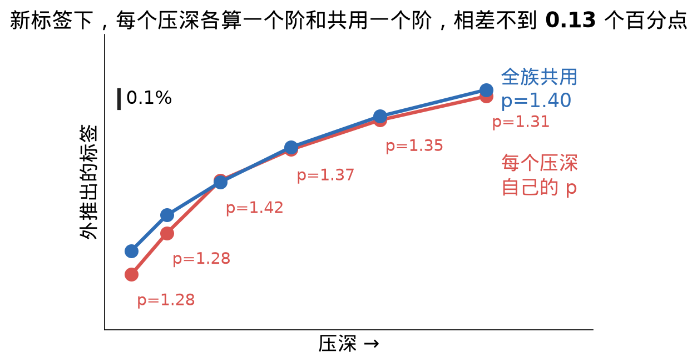

Week 3–4（第 3–4 周）
要学的碰撞能量；两个软物体相碰的解析解（降维法、Hertz）；标签对解析解与独立裁判；hydro、hydro++ 与死结，Genesis 中 hydro 实测；网络结构与多接触区耦合；接进引擎、体力法造标签、试训与椭圆骨架；待定事项。
本页结论
- 标签可信。 球、平底、圆锥、幂律压头、薄层、曲面块、斜压和两压头同时压，标签与独立裁判的差都在 1%–2% 以内（例外见 4.1 节：底面粘结的薄层目前低 0.5%–3.6%，斜压最浅一档低约 6%；斜压与两压头为旧版位移驱动标签）。剩下的偏差大多已找到来源（斜压最浅一档偏低约 6% 的原因仍是推测）；刚球压平块的误差账已闭合到 0.2% 以内。
- hydro 有一个结构上改不掉的问题。 即使让每个物体自由学一张三维压力场（hydro++），同一批物体只要多出一个接触，它算出的能量就只能是各接触之和。真实弹性体中两处接触会相互卸载，所以任何压力场都至少错 7.49%。它能背下见过的配对，对没见过的组合却错约 12%（这组数待复核，见 5.4 节）。
- 网络以解析解为骨架。 软–软接触的弹性解只取决于两表面之间的缝隙和合成模量。网络用解析解给出主体能量，只学一小部分修正；接触之间的相互影响由半空间的点力解给出。软球冠压软块一组换成新的三档网格标签后，用 3 个随机种子重训：留一验证误差中位数 0.21%，过了事先定的 0.3% 线；最大误差三个种子都超过 1% 线，最大的点都在软压头压硬块一组；插值考核 0.950%–0.963%，在 1% 线附近，处于重训随机波动范围内（见 6.2 节）。libuipc 已确认可以挂入自定义能量项，网络本身尚未接入。
- 还没解决的：两个接触区连成一片时能量会跳 4%–7%；骨架是半空间模型、没有层厚这个输入，在薄层上只用骨架会少算 79%–91%，目前的方法在薄层上不适用（见第 8 节）；整条求解回路的速度尚未实测。
问题：要学的是什么
粗模型只用很少几个数描述一个物体：刚体用 6 个（3 个平移、3 个转动），仿射体用 12 个（还能整体拉伸、剪切）。粗模型不会变形，两物体靠近时会互相穿入。真实物体则在接触处局部凹陷让开。我们要学的是这块凹陷里存的弹性能：
\[\color{#c0392b}{U_c(z)=\min_{w}\ \Pi(\Phi z+\Psi w)\;-\;\Pi(\Phi z)}.\]
- \(z\)：粗自由度，即上面的 6 个或 12 个数。
- \(\Phi z\)：由 \(z\) 决定的物体形状，也就是粗模型眼中物体现在的样子。
- \(\Psi w\)：接触处的局部变形。\(\Psi\) 是一组局部变形的形状模板，\(w\) 是每个模板用多少。
- \(\Pi\)：弹性能。\(\min_w\) 表示在两物体不穿透的条件下，找使总能量最小的局部变形。
直观地说，粗状态固定后，物体会自己找一种最省能量的凹法来避免穿透，凹完多出来的弹性能就是 \(U_c\)。它像一根弹簧，穿得越深越大。接触力是它对位置的导数：
\[\color{#c0392b}{F=-\frac{\partial U_c}{\partial z}},\]
能量随位置涨得越快，推力越大。
标签用 IPC（Li 等 2020 提出的保证不穿透的接触算法）加精细有限元，对每个构型实际求出这个最小值。


理论：接触力学的解析解
本节的结论在后面三处反复用到：检验标签（第 4 节）、证明 hydro 的问题（第 5 节）、搭建网络（第 6 节）。
2.1 两个软体等价于刚体压软平面
前提。 接触区比物体小得多，接触处两侧都可看成无限大的弹性体（半空间）；变形很小；无摩擦。

要证的事。 已知两物体的材料、表面形状和压深，求接触面上压力满足的方程，并说明它只依赖哪几个量。
四个出发点。
(1) 两侧受同一个压力。设 \(\mathbf x\) 是接触面上的位置，\(p(\mathbf x)\) 是那里单位面积上的压力。由作用与反作用，A 压 B 和 B 压 A 的压力相同，都记作 \(p(\mathbf x)\)。
(2) 每侧的下沉由压力决定（Boussinesq 解）：
\[\color{#c0392b}{u_i(\mathbf x)=\frac{1}{E_i'}\cdot\frac1\pi\int\frac{p(\mathbf x')}{|\mathbf x-\mathbf x'|}\,d\mathbf x'}.\]
\(u_i\) 是物体 \(i\)（A 或 B）在 \(\mathbf x\) 处表面下陷的距离，\(\mathbf x'\) 是施压的另一点，\(|\mathbf x-\mathbf x'|\) 是两点间距离。在表面一点上按一个力，周围表面都会跟着陷，陷的量与距离成反比：远一倍，陷一半。线弹性中各处的下陷可以直接相加，所以任意压力分布造成的下陷就是这个积分。两侧的积分完全相同，只差材料系数 \(1/E_i'\)。

(3) 有效硬度：
\[\color{#c0392b}{E_i'=\frac{E_i}{1-\nu_i^2}}.\]
\(E_i\) 是杨氏模量（材料多硬），\(\nu_i\) 是泊松比（竖着压时往侧面鼓出多少，介于 0 和 0.5 之间）。表面下被压的那一小块材料四周被挡住，不能自由侧鼓，所以比单轴压缩时更硬：\(\nu=0\) 时 \(E'=E\)，\(\nu=0.3\) 时约 \(1.10E\)，\(\nu=0.5\) 时 \(E'=\tfrac43E\)。
(4) 贴合条件：
\[\color{#c0392b}{u_A+u_B=\delta-h(\mathbf x),\qquad h=f_A+f_B}.\]
\(\delta\) 是压深，即两物体远处整体相向推近的距离；\(f_A,f_B\) 是两个表面各自弯离切平面的高度；\(h\) 是接触前两表面之间的缝隙。若不变形，推近 \(\delta\) 后每处会穿入 \(\delta-h\)；实际上两侧各凹一点，合起来正好让出来，因为接触区里两表面必须贴住，既不能穿过也不能留缝。
结论。 由 (1)–(4) 推出：记合成模量
\[\color{#c0392b}{\frac1{E^*}=\frac1{E_A'}+\frac1{E_B'}=\frac{1-\nu_A^2}{E_A}+\frac{1-\nu_B^2}{E_B}},\]
接触面上的压力满足
\[\color{#c0392b}{\frac1{E^*}\cdot\frac1\pi\int\frac{p(\mathbf x')}{|\mathbf x-\mathbf x'|}\,d\mathbf x'=\delta-h}.\]
推导
把 (2) 对 A、B 各写一次。由 (1)，两侧积分里的压力是同一个 \(p\)：
\[u_A=\frac{1}{E_A'}\cdot\frac1\pi\int\frac{p(\mathbf x')}{|\mathbf x-\mathbf x'|}\,d\mathbf x',\qquad u_B=\frac{1}{E_B'}\cdot\frac1\pi\int\frac{p(\mathbf x')}{|\mathbf x-\mathbf x'|}\,d\mathbf x'.\]
两式相加，积分相同，提出公因子：
\[u_A+u_B=\Big(\frac1{E_A'}+\frac1{E_B'}\Big)\cdot\frac1\pi\int\frac{p(\mathbf x')}{|\mathbf x-\mathbf x'|}\,d\mathbf x'.\]
左边由 (4) \(u_A+u_B=\delta-h\) 换掉：
\[\Big(\frac1{E_A'}+\frac1{E_B'}\Big)\cdot\frac1\pi\int\frac{p(\mathbf x')}{|\mathbf x-\mathbf x'|}\,d\mathbf x'=\delta-h.\]
把括号记作 \(\frac1{E^*}\)，再代入 (3) \(E_i'=\frac{E_i}{1-\nu_i^2}\)，即 \(\frac1{E_i'}=\frac{1-\nu_i^2}{E_i}\)：
\[\frac1{E^*}=\frac1{E_A'}+\frac1{E_B'}=\frac{1-\nu_A^2}{E_A}+\frac{1-\nu_B^2}{E_B}.\]
上式括号换成 \(\frac1{E^*}\)：
\[\frac1{E^*}\cdot\frac1\pi\int\frac{p(\mathbf x')}{|\mathbf x-\mathbf x'|}\,d\mathbf x'=\delta-h.\]
结果。 这正是「形状为 \(h\) 的刚体压硬度为 \(E^*\) 的半空间」的方程。所以解只取决于缝隙 \(h\) 和合成模量 \(E^*\)。\(1/E'\) 是软度，两侧软度直接相加，像两根串联的弹簧：不管哪边软，只要加起来一样，结果就一样。

适用范围。 线弹性、小变形、无摩擦、两侧近似半空间且表面坡度远小于 1。球、椭圆、幂律和任意轴对称缝隙都能直接用。平底这类边缘有直角棱的压头、接触半径相对曲率半径不够小、物体厚度有限、几个接触区相互影响时，要另外处理。
2.2 降维法：三维接触化成一排一维弹簧
要求的量。 已知轴对称缝隙 \(h(r)\)（\(r\) 是离接触中心的距离）、合成模量 \(E^*\)、压深 \(\delta\)，求接触半径 \(a\)、总力 \(F\)、弹性能 \(U_0\)。
条件。 接触区内表面贴住压头，\(\color{#c0392b}{u(r)=\delta-h(r)}\)（\(r\le a\)）；下沉由 2.1 节的点力叠加给出；无粘附，压强在边缘降到零，\(\color{#c0392b}{p(a)=0}\)，接触区外压强为零；总力 \(\color{#c0392b}{F=\int p\,dA}\)；能量是力从零压到 \(\delta\) 做的功，所以 \(\color{#c0392b}{dU_0/d\delta=F}\)。
结论（Popov 降维法）。 定义等效轮廓
\[\color{#c0392b}{g(x)=|x|\int_0^{|x|}\frac{h'(r)}{\sqrt{x^2-r^2}}\,dr},\]
其中 \(h'\) 是缝隙的斜率。则三维问题的压深、力、能量与「一排互不相干的弹簧压在轮廓 \(g\) 上」完全一致：第 \(x\) 根弹簧被压缩 \(\delta-g(x)\)，每单位长度刚度为 \(E^*\)，压缩量为零的那根是接触边缘：
\[\color{#c0392b}{\delta=g(a),\qquad F=2E^*\int_0^a\big(\delta-g(x)\big)dx,\qquad U_0=E^*\int_0^a\big(\delta-g(x)\big)^2dx}.\]
三维中各点相互牵连的效果全部被 \(h\to g\) 这一换算吸收，换算后弹簧可以各压各的。


推导
第一步：平底的解。 半径为 \(\tilde a\) 的刚性平底压入深度 \(\delta\) 时，底面下离圆心 \(r\) 处的压强是
\[p(r)=\frac{E^*\delta}{\pi\sqrt{\tilde a^2-r^2}}\quad(r<\tilde a).\]
下面先验证它让底面每一点都正好下沉 \(\delta\)（①–⑤），再积分出力（⑥），最后用同一套办法算底面外的下沉（⑦）。

① 写出一点的下沉。平底的底面是平的，接触区里缝隙 \(h=0\)，2.1 节最后的方程变成：对圆盘上任意一点 \(\mathbf x\)（观察点），
\[\frac1{E^*}\cdot\frac1\pi\int_{\text{圆盘}}\frac{p(\mathbf x')}{|\mathbf x-\mathbf x'|}\,d\mathbf x'=\delta.\]
左边就是观察点的下沉 \(u(\mathbf x)\)：\(\mathbf x'\) 是圆盘上的一小块，面积 \(d\mathbf x'\)，离圆心 \(r\)，离观察点 \(|\mathbf x-\mathbf x'|\)；每一小块让观察点陷下去「力 /（\(\pi E^*\cdot\)距离）」，全部加起来。代入 \(p\)：
\[u(\mathbf x)=\frac{1}{\pi E^*}\int_{\text{圆盘}}\frac{1}{|\mathbf x-\mathbf x'|}\cdot\frac{E^*\delta}{\pi\sqrt{\tilde a^2-r^2}}\,d\mathbf x'.\]
常数提到积分外面，\(E^*\) 约掉：
\[u(\mathbf x)=\frac{E^*\delta}{\pi\cdot\pi E^*}\int_{\text{圆盘}}\frac{d\mathbf x'}{\sqrt{\tilde a^2-r^2}\;|\mathbf x-\mathbf x'|}=\frac{\delta}{\pi^2}\,I,\qquad I=\int_{\text{圆盘}}\frac{d\mathbf x'}{\sqrt{\tilde a^2-r^2}\;|\mathbf x-\mathbf x'|}.\]
所以只要证明不管观察点在哪，\(I=\pi^2\)。

② 以观察点为中心切小块。从 \(\mathbf x\) 向四周发射线，方向角 \(\varphi\)（从水平方向量起，\(0\le\varphi<2\pi\)）；再用以 \(\mathbf x\) 为圆心的一圈圈圆弧把射线切成小段。小块离 \(\mathbf x\) 的距离为 \(\rho\)，所以
\[|\mathbf x-\mathbf x'|=\rho.\]
一小块夹在半径 \(\rho\) 与 \(\rho+d\rho\)、方向 \(\varphi\) 与 \(\varphi+d\varphi\) 之间：沿射线的边长是 \(d\rho\)；横向的边是半径 \(\rho\)、圆心角 \(d\varphi\) 的一段圆弧，弧长 = 半径 × 角度 = \(\rho\,d\varphi\)。面积是两边相乘：
\[d\mathbf x'=d\rho\cdot\rho\,d\varphi=\rho\,d\rho\,d\varphi.\]
方向 \(\varphi\) 的射线从 \(\mathbf x\) 走到圆盘边缘的长度记作 \(L(\varphi)\)。代入 \(I\)：
\[I=\int_0^{2\pi}\left[\int_0^{L(\varphi)}\frac{\rho\,d\rho}{\sqrt{\tilde a^2-r^2}\;\rho}\right]d\varphi.\]
分子分母的 \(\rho\) 约掉：
\[I=\int_0^{2\pi}\left[\int_0^{L(\varphi)}\frac{d\rho}{\sqrt{\tilde a^2-r^2}}\right]d\varphi.\]
方括号里是沿一条射线从 \(\mathbf x\) 走到边缘的积分；\(r\) 仍是小块到圆心的距离，随小块在射线上的位置变。

③ 正反两条射线拼成一条弦。外层积分拆成前半圈和后半圈，后半圈的方向角写成 \(\varphi+\pi\)（\(\varphi\) 仍从 \(0\) 到 \(\pi\)）：
\[I=\int_0^{\pi}\left[\int_0^{L(\varphi)}\frac{d\rho}{\sqrt{\tilde a^2-r^2}}+\int_0^{L(\varphi+\pi)}\frac{d\rho}{\sqrt{\tilde a^2-r^2}}\right]d\varphi.\]
方括号里两条射线方向相反，合起来是一条穿过 \(\mathbf x\)、两端都在圆盘边缘上的弦。对这条弦取三个量：从圆心 \(O\) 向弦作垂线，垂足 \(M\)（弦的中点），\(OM=m\)；半弦长 \(c\)；弦上一点到 \(M\) 的有向距离 \(q\)（沿方向 \(\varphi\) 为正，\(-c\le q\le c\)）。两个直角都在 \(M\) 的直角三角形，斜边分别是 \(r\) 和 \(\tilde a\)：
\[r^2=m^2+q^2,\qquad\tilde a^2=m^2+c^2.\]
相减，\(m\) 消掉：
\[\tilde a^2-r^2=(m^2+c^2)-(m^2+q^2)=c^2-q^2.\]
再把 \(\rho\) 换成 \(q\)。观察点在弦上的位置记作 \(q_{\mathbf x}\)。方向 \(\varphi\) 的射线上，离 \(\mathbf x\) 为 \(\rho\) 的小块在 \(q=q_{\mathbf x}+\rho\)，所以 \(dq=d\rho\)；\(\rho\) 从 \(0\) 走到 \(L(\varphi)\) 时，\(q\) 从 \(q_{\mathbf x}\) 走到弦端 \(c\)：
\[\int_0^{L(\varphi)}\frac{d\rho}{\sqrt{\tilde a^2-r^2}}=\int_{q_{\mathbf x}}^{c}\frac{dq}{\sqrt{c^2-q^2}}.\]
方向 \(\varphi+\pi\) 的射线上，小块在 \(q=q_{\mathbf x}-\rho\)，所以 \(dq=-d\rho\)，即 \(d\rho=-dq\)；\(\rho\) 从 \(0\) 走到 \(L(\varphi+\pi)\) 时，\(q\) 从 \(q_{\mathbf x}\) 走到另一端 \(-c\)：
\[\int_0^{L(\varphi+\pi)}\frac{d\rho}{\sqrt{\tilde a^2-r^2}}=\int_{q_{\mathbf x}}^{-c}\frac{-dq}{\sqrt{c^2-q^2}}.\]
积分的上下限对调一次，积分变一次号（\(\int_{q_{\mathbf x}}^{-c}=-\int_{-c}^{q_{\mathbf x}}\)），这个负号和被积式里的负号相乘得正：
\[\int_{q_{\mathbf x}}^{-c}\frac{-dq}{\sqrt{c^2-q^2}}=\int_{-c}^{q_{\mathbf x}}\frac{dq}{\sqrt{c^2-q^2}}.\]
两段首尾在 \(q_{\mathbf x}\) 接上，正好是整条弦，观察点的位置 \(q_{\mathbf x}\) 消失：
\[\int_{-c}^{q_{\mathbf x}}\frac{dq}{\sqrt{c^2-q^2}}+\int_{q_{\mathbf x}}^{c}\frac{dq}{\sqrt{c^2-q^2}}=\int_{-c}^{c}\frac{dq}{\sqrt{c^2-q^2}}\equiv J.\]

④ 一条弦的积分 \(J\)。\(q\to\pm c\) 时分母 \(\sqrt{c^2-q^2}\to0\)，被积函数趋于无穷，直接看不出积分值，换一个变量。在弦上立一个以 \(M\) 为圆心、半径 \(c\) 的半圆，弦上 \(q\) 处竖直往上碰到半圆的点为 \(Q\)，竖直线转到 \(MQ\) 的角为 \(\psi\)（\(Q\) 在 \(M\) 右边时 \(\psi>0\)）。直角三角形里斜边 \(MQ=c\)，\(\psi\) 的对边是 \(q\)：
\[q=c\sin\psi,\qquad-\frac{\pi}{2}\le\psi\le\frac{\pi}{2}.\]
代入根号，用 \(\sin^2\psi+\cos^2\psi=1\)；\(\psi\) 在这个范围里 \(\cos\psi\ge0\)，开根号不用加负号：
\[\sqrt{c^2-q^2}=\sqrt{c^2-c^2\sin^2\psi}=c\sqrt{\cos^2\psi}=c\cos\psi.\]
\(c\cos\psi\) 就是 \(Q\) 的高度。再把 \(dq\) 换成 \(d\psi\)：\(c\) 是这条弦固定的半弦长，不随 \(\psi\) 变；\(\sin\psi\) 对 \(\psi\) 的导数是 \(\cos\psi\)，所以
\[\frac{dq}{d\psi}=c\cos\psi.\]
两边乘 \(d\psi\)：
\[dq=c\cos\psi\,d\psi.\]
从图上看：\(\psi\) 多转一个小角 \(d\psi\)，\(Q\) 沿半圆走过一小段弧，弧长 = 半径 × 角度 = \(c\,d\psi\)；这段弧与水平方向的夹角也是 \(\psi\)，它的水平分量 \(c\,d\psi\cos\psi\) 正是弦上小块往右挪的距离 \(dq\)。
上下限：\(q=-c\) 时 \(\sin\psi=-1\)，\(\psi=-\pi/2\)；\(q=c\) 时 \(\sin\psi=1\)，\(\psi=\pi/2\)。代入 \(J\)，分子分母的 \(c\cos\psi\) 约掉，\(d\psi\) 的原函数是 \(\psi\)：
\[J=\int_{-\pi/2}^{\pi/2}\frac{c\cos\psi\,d\psi}{c\cos\psi}=\int_{-\pi/2}^{\pi/2}d\psi=\frac{\pi}{2}-\Big(-\frac{\pi}{2}\Big)=\pi.\]
结果里既没有半弦长 \(c\)，也没有观察点的位置：每条弦都是 \(\pi\)。

⑤ 所有方向加起来。③ 的方括号就是 \(J=\pi\)，与 \(\varphi\) 无关：
\[I=\int_0^{\pi}J\,d\varphi=\pi\int_0^{\pi}d\varphi=\pi\Big[\varphi\Big]_0^{\pi}=\pi\,(\pi-0)=\pi^2.\]
代回 ①：
\[u(\mathbf x)=\frac{\delta}{\pi^2}\,\pi^2=\delta.\]
底面处处下沉 \(\delta\)，所以 \(p(r)\) 就是平底的压强。边缘（\(r\to\tilde a\)）压强冲高，是因为底面外面的表面要弹回去，边缘得更用力才能把底面压平。

⑥ 积分出力。把底面切成一圈圈圆环：半径 \(r\) 到 \(r+dr\) 的圆环周长 \(2\pi r\)、宽 \(dr\)，面积 \(2\pi r\,dr\)；同一圈上 \(r\) 相同，压强相同。力 = 每圈的「压强 × 面积」加起来：
\[F_{\text{平底}}=\int_0^{\tilde a}\frac{E^*\delta}{\pi\sqrt{\tilde a^2-r^2}}\,2\pi r\,dr.\]
\(E^*\)、\(\delta\) 不随 \(r\) 变，提到积分外面，\(\pi\) 约掉：
\[F_{\text{平底}}=2E^*\delta\int_0^{\tilde a}\frac{r\,dr}{\sqrt{\tilde a^2-r^2}}.\]
换元：令 \(v=\tilde a^2-r^2\)（就是根号里那一项）。对 \(r\) 求导：\(\tilde a^2\) 是常数，导数为零；\(r^2\) 的导数是 \(2r\)，所以
\[\frac{dv}{dr}=-2r,\qquad dv=-2r\,dr,\qquad r\,dr=-\frac12\,dv.\]
上下限跟着换：\(r=0\) 时 \(v=\tilde a^2\)；\(r=\tilde a\) 时 \(v=0\)。代入：
\[\int_0^{\tilde a}\frac{r\,dr}{\sqrt{\tilde a^2-r^2}}=\int_{\tilde a^2}^{0}\frac{-\frac12\,dv}{\sqrt v}=-\frac12\int_{\tilde a^2}^{0}\frac{dv}{\sqrt v}.\]
\(r\) 从 \(0\) 走到 \(\tilde a\) 时，\(v\) 是从 \(\tilde a^2\) 倒着减到 \(0\)，所以先写出来的积分是从大积到小。把上下限对调成从 \(0\) 到 \(\tilde a^2\)，积分变一次号，正好抵掉前面的负号：
\[-\frac12\int_{\tilde a^2}^{0}\frac{dv}{\sqrt v}=\frac12\int_0^{\tilde a^2}\frac{dv}{\sqrt v}.\]
求原函数：\(2\sqrt v\) 对 \(v\) 求导得 \(2\cdot\frac12v^{-1/2}=\frac1{\sqrt v}\)，所以 \(\frac1{\sqrt v}\) 的原函数是 \(2\sqrt v\)：
\[\frac12\int_0^{\tilde a^2}\frac{dv}{\sqrt v}=\frac12\Big[2\sqrt v\,\Big]_0^{\tilde a^2}=\frac12\big(2\tilde a-0\big)=\tilde a.\]
代回：
\[F_{\text{平底}}=2E^*\tilde a\,\delta.\]
力与压深成正比，刚度 \(2E^*\tilde a\)，半径越大越硬；这与下面「越压越硬」的 \(K=2aE^*\) 是同一个关系。

⑦ 底面外的下沉。观察点 \(\mathbf x\) 现在在圆盘外，离圆心 \(|\mathbf x|>\tilde a\)。① 的推导没有用到 \(\mathbf x\) 在圆盘内（积分只在圆盘上做，盘外压强为零），所以仍有
\[u(\mathbf x)=\frac{\delta}{\pi^2}\,I,\qquad I=\int_{\text{圆盘}}\frac{d\mathbf x'}{\sqrt{\tilde a^2-r^2}\;|\mathbf x-\mathbf x'|}\qquad(|\mathbf x|>\tilde a).\]
② 的切法照用：从 \(\mathbf x\) 发射线，\(\rho\) 照样约掉。不同的是，现在不是每个方向的射线都碰得到圆盘。从 \(\mathbf x\) 向圆盘作两条切线，切点记作 \(T\)；只有夹在两条切线之间的射线穿过圆盘，其余方向上没有压强，不贡献。连线 \(\mathbf xO\) 与切线的夹角记作 \(\omega\)。半径 \(OT\) 垂直于切线，所以三角形 \(O\)、\(T\)、\(\mathbf x\) 在 \(T\) 处是直角，斜边是 \(|\mathbf x|\)，\(\omega\) 的对边是半径 \(\tilde a\)：
\[\sin\omega=\frac{\tilde a}{|\mathbf x|},\qquad\omega=\arcsin\frac{\tilde a}{|\mathbf x|}.\]
能穿过圆盘的方向从一条切线转到另一条，共转过 \(2\omega\)。

每条这样的射线从弦的一端进入圆盘、从另一端出来，经过一整条弦。③ 的勾股定理照样给出 \(\tilde a^2-r^2=c^2-q^2\)；沿射线 \(q=q_{\mathbf x}+\rho\)，\(dq=d\rho\)，在圆盘里 \(q\) 从进入点 \(-c\) 走到出去点 \(c\)（盘外那两段压强为零）：
\[\int_{\text{沿这条射线}}\frac{d\rho}{\sqrt{\tilde a^2-r^2}}=\int_{-c}^{c}\frac{dq}{\sqrt{c^2-q^2}}=J=\pi\qquad(\text{由 ④}).\]
和盘内不同，这里一条射线自己就走完整条弦，不需要反方向那条来补另一半，所以方向角不折成半圈，直接对能穿过圆盘的 \(2\omega\) 求和：
\[I=\int_{\text{两切线之间}}J\,d\varphi=\pi\cdot2\omega=2\pi\arcsin\frac{\tilde a}{|\mathbf x|}.\]
代回：
\[u(\mathbf x)=\frac{\delta}{\pi^2}\cdot2\pi\arcsin\frac{\tilde a}{|\mathbf x|}=\frac{2\delta}{\pi}\arcsin\frac{\tilde a}{|\mathbf x|}.\]
核对两头。观察点正好在边缘（\(|\mathbf x|=\tilde a\)）时 \(\arcsin1=\frac\pi2\)，\(u=\delta\)，和底面内接上。离得很远时 \(\frac{\tilde a}{|\mathbf x|}\) 很小，\(\arcsin\frac{\tilde a}{|\mathbf x|}\approx\frac{\tilde a}{|\mathbf x|}\)，于是 \(u\approx\frac{2\tilde a\delta}{\pi|\mathbf x|}=\frac{F_{\text{平底}}}{\pi E^*|\mathbf x|}\)，正是 2.1 节一个力 \(F_{\text{平底}}\) 在距离 \(|\mathbf x|\) 处压出的下沉：离远了，整块平底就像一个点力。
所以平底外离圆心 \(r\) 处（\(r\) 就是上面的 \(|\mathbf x|\)）的下沉是
\[u(r)=\frac{2\delta}{\pi}\arcsin\frac{\tilde a}{r}\quad(r>\tilde a).\]
第二步：把一般压入拆成一串平底。 接触半径为 \(\tilde a\) 时再多压 \(d\tilde\delta\)，相当于半径 \(\tilde a\) 的平底多压 \(d\tilde\delta\)（\(\tilde\delta\) 是叠加过程中的中间压深，\(d\) 只作微分号）。记压深与接触半径的关系为 \(\tilde\delta=g(\tilde a)\)，压到最后 \(\delta=g(a)\)。各步的力相加：
\[F=\int_0^a2E^*\tilde a\,g'(\tilde a)\,d\tilde a.\]
分部积分，并用 \(g(a)=\delta\)：
\[F=2E^*\Big[\tilde a\,g(\tilde a)\Big]_0^a-2E^*\int_0^ag\,d\tilde a=2E^*\Big(a\,\delta-\int_0^ag\,d\tilde a\Big)=2E^*\int_0^a\big(\delta-g(x)\big)dx.\]
第三步：用接触边缘的贴合条件定出 \(g\)。 各步在 \(r=a\) 处的下沉相加：
\[u(a)=\frac2\pi\int_0^a\arcsin\frac{\tilde a}{a}\;g'(\tilde a)\,d\tilde a.\]
分部积分，\(\frac{d}{d\tilde a}\arcsin\frac{\tilde a}{a}=\frac{1}{\sqrt{a^2-\tilde a^2}}\)：
\[u(a)=\frac2\pi\Big[\arcsin\frac{\tilde a}{a}\,g(\tilde a)\Big]_0^a-\frac2\pi\int_0^a\frac{g(\tilde a)}{\sqrt{a^2-\tilde a^2}}\,d\tilde a.\]
用 \(g(a)=\delta\)、\(\arcsin1=\pi/2\)、\(\arcsin0=0\)，第一项是 \(\frac2\pi\cdot\frac\pi2\,\delta=\delta\)：
\[u(a)=\delta-\frac2\pi\int_0^a\frac{g(\tilde a)}{\sqrt{a^2-\tilde a^2}}\,d\tilde a.\]
边缘处表面正好贴住压头，\(u(a)=\delta-h(a)\)，两式比较：
\[h(a)=\frac2\pi\int_0^a\frac{g(\tilde a)}{\sqrt{a^2-\tilde a^2}}\,d\tilde a.\]
这是关于 \(g\) 的 Abel 积分方程，它的解就是上面的 \(g(x)\) 定义式。下面逐步反演（先取 \(x>0\)；把积分变量记成 \(t\)、上限记成 \(r\)，即 \(h(r)=\frac2\pi\int_0^r\frac{g(t)}{\sqrt{r^2-t^2}}dt\)）。
① 两边乘 \(\dfrac{r}{\sqrt{x^2-r^2}}\)，对 \(r\) 从 0 积到 \(x\)：
\[\int_0^x\frac{r\,h(r)}{\sqrt{x^2-r^2}}\,dr=\frac2\pi\int_0^x\int_0^r\frac{r\,g(t)}{\sqrt{x^2-r^2}\,\sqrt{r^2-t^2}}\,dt\,dr.\]
② 交换积分次序（积分区域是 \(0\le t\le r\le x\)）：
\[\int_0^x\frac{r\,h(r)}{\sqrt{x^2-r^2}}\,dr=\frac2\pi\int_0^xg(t)\Big[\int_t^x\frac{r\,dr}{\sqrt{x^2-r^2}\,\sqrt{r^2-t^2}}\Big]dt.\]
③ 方括号里的积分：令 \(\tau=r^2\)（\(\tau\) 是换元变量），\(r\,dr=\tfrac12d\tau\)；再令 \(\tau=t^2+(x^2-t^2)\sin^2\theta\)：
\[\int_t^x\frac{r\,dr}{\sqrt{x^2-r^2}\,\sqrt{r^2-t^2}}=\frac12\int_{t^2}^{x^2}\frac{d\tau}{\sqrt{(x^2-\tau)(\tau-t^2)}}=\frac12\int_0^{\pi/2}2\,d\theta=\frac\pi2.\]
④ 代回②，\(\frac2\pi\cdot\frac\pi2=1\)：
\[\int_0^x\frac{r\,h(r)}{\sqrt{x^2-r^2}}\,dr=\int_0^xg(t)\,dt.\]
⑤ 左边分部积分，\(\frac{r}{\sqrt{x^2-r^2}}=-\frac{d}{dr}\sqrt{x^2-r^2}\)，且接触中心缝隙为零，\(h(0)=0\)：
\[\int_0^x\frac{r\,h(r)}{\sqrt{x^2-r^2}}\,dr=\Big[-h(r)\sqrt{x^2-r^2}\Big]_0^x+\int_0^xh'(r)\sqrt{x^2-r^2}\,dr=\int_0^xh'(r)\sqrt{x^2-r^2}\,dr.\]
⑥ 两边对 \(x\) 求导。右边是 \(g(x)\)；左边上限处被积函数为 \(h'(x)\cdot0=0\)，只剩对 \(x\) 的偏导：
\[g(x)=\frac{d}{dx}\int_0^xh'(r)\sqrt{x^2-r^2}\,dr=\int_0^xh'(r)\frac{x}{\sqrt{x^2-r^2}}\,dr=x\int_0^x\frac{h'(r)}{\sqrt{x^2-r^2}}\,dr.\]
⑦ \(g\) 关于 \(x=0\) 对称（接触左右对称），\(x<0\) 时取 \(|x|\)：
\[g(x)=|x|\int_0^{|x|}\frac{h'(r)}{\sqrt{x^2-r^2}}\,dr.\]
第四步：能量。 对 \(U_0=E^*\int_0^a(\delta-g)^2dx\) 求导。积分上限 \(a\) 也随 \(\delta\) 变（含参积分求导）：
\[\frac{dU_0}{d\delta}=E^*\big(\delta-g(a)\big)^2\frac{da}{d\delta}+E^*\int_0^a2\big(\delta-g(x)\big)dx.\]
上限处 \(\delta-g(a)=0\)，边界项消失：
\[\frac{dU_0}{d\delta}=2E^*\int_0^a\big(\delta-g(x)\big)dx=F.\]
又 \(\delta=0\) 时 \(U_0=0\)，所以它就是弹性能。
越压越硬
条件。 刚度是力–压深曲线的斜率，\(\color{#c0392b}{K=dF/d\delta}\)；由 2.2 节，\(F=2E^*\int_0^a(\delta-g)dx\)，接触边缘满足 \(\delta=g(a)\)。
结论。
\[\color{#c0392b}{K=2aE^*}.\]
推导
对 \(F=2E^*\int_0^a(\delta-g(x))dx\) 求导。积分上限 \(a\) 随 \(\delta\) 变（含参积分求导：上限处的被积函数乘 \(\frac{da}{d\delta}\)，再加被积函数对 \(\delta\) 的偏导的积分）：
\[K=\frac{dF}{d\delta}=2E^*\big(\delta-g(a)\big)\frac{da}{d\delta}+2E^*\int_0^a\frac{\partial}{\partial\delta}\big(\delta-g(x)\big)dx.\]
由 \(\delta=g(a)\)，第一项为零；\(g(x)\) 不含 \(\delta\)，被积函数对 \(\delta\) 的偏导是 1：
\[K=2E^*\int_0^a1\,dx=2E^*\,a.\]
刚度只取决于此刻的接触宽度：再压一点，接触区内每根弹簧都多压一点，多出来的力是 \(E^*\cdot2a\cdot\Delta\delta\)。压得越深接触越宽，就越硬。压头形状只决定 \(a\) 如何随 \(\delta\) 变化，不改变这个关系。

2.3 用降维法推出 Hertz
条件。 两个球（半径 \(R_A\)、\(R_B\)）在最低点相碰；接触区远小于球，球面比最低点高出的量 \(f_i\) 远小于 \(R_i\)；2.2 节降维法：\(g\) 的定义式、\(\delta=g(a)\)、\(F=2E^*\int_0^a(\delta-g)dx\)、\(dU_H/d\delta=F\)。
结论。 其中 \(\frac1{R^*}=\frac1{R_A}+\frac1{R_B}\) 是合成半径：
\[\color{#c0392b}{h=\frac{r^2}{2R^*},\qquad a^2=R^*\delta},\]
\[\color{#c0392b}{F=\frac43E^*\sqrt{R^*}\,\delta^{3/2},\qquad U_H=\frac{8}{15}E^*\sqrt{R^*}\,\delta^{5/2}}.\]
推导
缝隙。 半径为 \(R_i\) 的球，离接触中心水平距离 \(r\) 处，球面比最低点高出 \(f_i\)。球心、最低点和这一点构成直角三角形，水平边 \(r\)、竖直边 \(R_i-f_i\)、斜边 \(R_i\)：
\[\color{#c0392b}{r^2+(R_i-f_i)^2=R_i^2}\ \Longrightarrow\ r^2+R_i^2-2R_if_i+f_i^2=R_i^2\ \Longrightarrow\ r^2=2R_if_i-f_i^2.\]
接触区很小，\(\color{#c0392b}{f_i\ll R_i}\)，略去 \(f_i^2\)：
\[r^2\approx2R_if_i\ \Longrightarrow\ f_i\approx\frac{r^2}{2R_i}.\]
即在最低点附近球面像抛物线，离中心远一倍，高出四倍。两侧相加：
\[\color{#c0392b}{h=f_A+f_B=\frac{r^2}{2R_A}+\frac{r^2}{2R_B}=\frac{r^2}{2}\Big(\frac1{R_A}+\frac1{R_B}\Big)=\frac{r^2}{2R^*},\qquad \frac1{R^*}=\frac1{R_A}+\frac1{R_B}}.\]
\(R^*\) 是合成半径，两侧曲率（半径的倒数）相加，与软度相加是同一个道理（球压平面时 \(R^*\) 就是球半径 \(R\)）。

等效轮廓。 \(h'(r)=r/R^*\)，代入 \(g\) 的定义：
\[g(x)=\frac{|x|}{R^*}\int_0^{|x|}\frac{r}{\sqrt{x^2-r^2}}\,dr=\frac{|x|}{R^*}\Big[-\sqrt{x^2-r^2}\Big]_0^{|x|}=\frac{|x|}{R^*}\big(0+|x|\big)=\frac{x^2}{R^*}.\]
接触半径。 由 \(g(a)=\delta\)：\(a^2/R^*=\delta\)，即 \(\color{#c0392b}{a^2=R^*\delta}\)。
力。 先积分：
\[\color{#c0392b}{F=2E^*\int_0^a\Big(\delta-\frac{x^2}{R^*}\Big)dx=2E^*\Big(a\delta-\frac{a^3}{3R^*}\Big)}.\]
代入 \(a=\sqrt{R^*\delta}\)：\(a\delta=\sqrt{R^*}\,\delta^{3/2}\)，\(a^3/R^*=(R^*\delta)^{3/2}/R^*=\sqrt{R^*}\,\delta^{3/2}\)，所以
\[\color{#c0392b}{F=2E^*\Big(\sqrt{R^*}\,\delta^{3/2}-\frac13\sqrt{R^*}\,\delta^{3/2}\Big)=2E^*\cdot\frac23\sqrt{R^*}\,\delta^{3/2}=\frac43E^*\sqrt{R^*}\,\delta^{3/2}}.\]
能量。 由 \(dU/d\delta=F\)，从零积分（\(\delta'\) 是积分变量）：
\[\color{#c0392b}{U_H=\int_0^\delta\frac43E^*\sqrt{R^*}\,\delta'^{3/2}\,d\delta'=\frac43E^*\sqrt{R^*}\cdot\frac25\delta^{5/2}=\frac{8}{15}E^*\sqrt{R^*}\,\delta^{5/2}}.\]
直观理解。 接触圈只按压深的平方根变大，能量却按 2.5 次方涨，因为每处压得更深、接触圈又同时变宽，两件事叠在一起。大球接触圈更宽，所以更硬，但只按 \(\sqrt{R^*}\) 变化。
2.4 幂律形状与椭圆接触
幂律。 条件：缝隙 \(\color{#c0392b}{h=A\,r^n}\)，\(A\) 是系数，\(n\) 是幂次。\(n\) 越大压头中心越平（平底是 \(n\to\infty\)），\(n\) 越小中心越尖（圆锥 \(n=1\)，球 \(n=2\)）；再用 2.2 节降维法的 \(g\) 定义式、\(\delta=g(a)\) 和 \(U_0=E^*\int_0^a(\delta-g)^2dx\)。
结论：
\[\color{#c0392b}{a\propto\delta^{1/n},\qquad U_0\propto\delta^{(2n+1)/n}}.\]
推导
\(h'=An\,r^{n-1}\)，代入 \(g\) 的定义：
\[g(x)=|x|\int_0^{|x|}\frac{A\,n\,r^{n-1}}{\sqrt{x^2-r^2}}\,dr.\]
令 \(r=|x|t\)，\(dr=|x|\,dt\)，\(\sqrt{x^2-r^2}=|x|\sqrt{1-t^2}\)：
\[\begin{aligned}g(x)&=|x|\int_0^1\frac{A\,n\,|x|^{n-1}t^{n-1}}{|x|\sqrt{1-t^2}}\,|x|\,dt\\&=A\,|x|^n\cdot n\int_0^1\frac{t^{n-1}}{\sqrt{1-t^2}}\,dt\\&=\mu_n\,A\,|x|^n,\qquad \mu_n=n\int_0^1\frac{t^{n-1}}{\sqrt{1-t^2}}\,dt.\end{aligned}\]
（\(\mu_n\) 是只依赖 \(n\) 的常数。）由 \(\delta=g(a)\)：
\[\delta=\mu_n\,A\,a^n\ \Longrightarrow\ a=\Big(\frac{\delta}{\mu_n A}\Big)^{1/n}\propto \delta^{1/n}.\]
于是 \(g(x)=\mu_n A\,a^n(x/a)^n=\delta\,(x/a)^n\)，\(\delta-g(x)=\delta\big(1-(x/a)^n\big)\)。代入能量：
\[U_0=E^*\int_0^a\delta^2\Big(1-\Big(\frac xa\Big)^n\Big)^2dx.\]
令 \(x=a\xi\)（\(\xi\) 是换元变量），\(dx=a\,d\xi\)：
\[U_0=E^*\,a\,\delta^2\int_0^1\big(1-\xi^n\big)^2d\xi\ \propto\ a\,\delta^2.\]
（积分 \(\int_0^1(1-\xi^n)^2d\xi=1-\frac{2}{n+1}+\frac{1}{2n+1}\) 只依赖 \(n\)，是常数。）
代入 \(a\propto \delta^{1/n}\)：
\[U_0\propto \delta^{1/n}\cdot \delta^2=\delta^{2+1/n}=\delta^{(2n+1)/n}.\]
所以球是 2.5 次方，圆锥 3 次方，平底 2 次方。压头越尖，接触面积随压深涨得越快，能量也涨得越快。

椭圆接触。 接触处两个方向弯曲程度不同时（例如压在环面内圈，绕管截面方向凸、沿圆环方向凹），接触区是椭圆，能量由椭圆 Hertz 公式精确给出。用扁度衡量椭圆有多扁：
\[\color{#c0392b}{e=\ln\frac{\kappa_1}{\kappa_2}},\]
\(e\) 是扁度，\(\kappa_1\ge\kappa_2\) 是接触处两个主方向上两侧合起来的曲率（曲率 = 1/半径，越弯越大）。圆形接触扁度为 0。把椭圆当圆算会少算能量，扁度 1.10 时少 2.5%。

2.5 相似律
条件。 2.3 节的 Hertz 能量，球压平面时 \(R^*=R\)：\(U_H=\frac{8}{15}E^*\sqrt R\,\delta^{5/2}\)。
结论。
\[\color{#c0392b}{\frac{U_H}{E^*R^3}=\frac{8}{15}\Big(\frac{\delta}{R}\Big)^{5/2}}.\]
推导
两边除以 \(E^*R^3\)：
\[\frac{U_H}{E^*R^3}=\frac{8}{15}\cdot\frac{\sqrt R\,\delta^{5/2}}{R^3}.\]
\(\frac{\sqrt R}{R^3}=R^{1/2-3}=R^{-5/2}\)，与 \(\delta^{5/2}\) 合成一项：
\[\frac{U_H}{E^*R^3}=\frac{8}{15}\,\delta^{5/2}R^{-5/2}=\frac{8}{15}\Big(\frac{\delta}{R}\Big)^{5/2}.\]
左边是去掉单位的能量，右边只依赖 \(\delta/R\)。把整个问题等比例放大，只要 \(\delta/R\) 不变，去掉单位后的结果就不变；有限变形带来的偏差也只依赖 \(\delta/R\)。因此不同半径的球在相同 \(\delta/R\) 下，「标签 ÷ Hertz」必须相等。这是检查标签的一个不依赖任何裁判的条件。

2.6 两处接触之间的相互影响
已知与目标。 同一物体上有多个接触区，各区的力为 \(F_i\)，两区中心距为 \(r_{ij}\)，被压物体的有效硬度为 \(E'\)。求各区的总压深 \(\delta_i\)。
条件。 2.1 节的下沉公式 \(u(\mathbf x)=\frac{1}{E'}\cdot\frac1\pi\int\frac{p(\mathbf x')}{|\mathbf x-\mathbf x'|}\,d\mathbf x'\)；线弹性下各处载荷造成的下沉可以直接相加；各区只靠自身接触、力为 \(F_i\) 时需要的压深 \(\delta_{e,i}(F_i)\) 由单区模型给出。
结论。
\[\color{#c0392b}{\delta_i=\delta_{e,i}(F_i)+\sum_{j\ne i}\frac{F_j}{\pi E'\,r_{ij}}}.\]
推导
点力解。 由 2.1 节的下沉公式，一个集中力 \(F\) 在距离 \(r\) 处造成下沉。压力全集中在一点时，\(\int p(\mathbf x')\,d\mathbf x'=F\)，积分里的距离都是 \(r\)：
\[u(r)=\frac{1}{E'}\cdot\frac1\pi\cdot\frac{F}{r}\]
即
\[\color{#c0392b}{u(r)=\frac{F}{\pi E'\,r}}.\]
叠加。 线弹性下各处载荷的效果直接相加，所以每个接触区的压深 = 自己压出来的 + 别处把整片表面带下去的：
\[\color{#c0392b}{\delta_i=\delta_{e,i}(F_i)+\sum_{j\ne i}u_j(r_{ij})}.\]
\(u_j(r_{ij})\) 是第 \(j\) 区的力在第 \(i\) 区造成的下沉。把点力解中的 \(F\)、\(r\) 换成第 \(j\) 区的力和两区中心距：
\[u_j(r_{ij})=\frac{F_j}{\pi E'\,r_{ij}},\]
代入叠加式：
\[\delta_i=\delta_{e,i}(F_i)+\sum_{j\ne i}\frac{F_j}{\pi E'\,r_{ij}}.\]
\(\delta_{e,i}(F_i)\) 是只靠自身接触、力为 \(F_i\) 时需要的压深（由单区模型给出）。别的区力越大、离得越近，本区被带下去越多，自己要压的就越少。

例：两个相同平底。 平底半径 \(a\)、中心距 \(r\)，两者同时压到同一深度 \(\delta\)。求同时压与单独压的能量比
\[\color{#c0392b}{c=\frac{U_③}{U_①+U_②}},\]
\(U_①,U_②\) 是各自单独压的能量，\(U_③\) 是同时压的能量。条件：上面的叠加式；2.2 节第一步的平底解 \(F=2E'a\delta\)（这里压的是同一个物体，用它的有效硬度 \(E'\)）。
结论：
\[\color{#c0392b}{c=\frac{1}{1+\dfrac{2a}{\pi r}}}.\]
推导
- 单个平底 \(\color{#c0392b}{F_1=2E'a\delta}\)，所以力为 \(F\) 时需要的压深是 \(\delta_e(F)=F/(2E'a)\)。
-
同时压时每个的力为 \(F\)，代入叠加式：
\[\delta=\frac{F}{2E'a}+\frac{F}{\pi E'r}=\frac{F}{2E'a}\Big(1+\frac{2a}{\pi r}\Big).\]
两边乘 \(2E'a\)，再除以 \(1+\frac{2a}{\pi r}\)：
\[F=\frac{2E'a\,\delta}{1+\dfrac{2a}{\pi r}}.\]
-
平底力与压深成正比，能量为 \(\color{#c0392b}{U=\tfrac12F\delta}\)（力从零线性涨到终值，平均只有一半在做功）：
\[U=\int_0^\delta2E'a\,s\,ds=E'a\,\delta^2=\tfrac12\big(2E'a\,\delta\big)\delta=\tfrac12F\delta.\]
同时压时力也与压深成正比，同样 \(U=\tfrac12F\delta\)。两种情况压深相同，所以
\[c=\frac{2\cdot\tfrac12F\delta}{2\cdot\tfrac12F_1\delta}=\frac{F}{F_1}=\frac{1}{1+\dfrac{2a}{\pi r}}.\]
中心距为半径 4 倍时 \(c=1/(1+\tfrac{2}{4\pi})=0.863\)，10 倍时 \(c=1/(1+\tfrac{2}{10\pi})=0.940\)。两处接触靠得越近，相互卸载越多，\(c\) 越小。
标签怎么造
3.1 加载方式
压头和被压块都可以是有限元软体；刚球是三角面拼成的多面体。刚球固定不动；块不固定（软压头时压头也不固定），各节点按质量分摊一对大小相等、方向相反的力，把两者压在一起，停稳后读弹性能。这对应第 1 节「给定粗状态，取最小能量」的定义。
物体在水平方向没有约束，会缓慢漂移，所以用弹簧钉住中轴线上节点的水平位置。正确解里这些节点本来就不横向移动，钉点带来的误差为 0.05%–0.4%；把钉点刚度加到 3 倍，验收结论只变不到 0.01 个百分点。

标签取能量与 Hertz 能量之比：
\[\color{#c0392b}{X=\frac{U}{\tfrac{8}{15}E^*\sqrt R\,\delta^{5/2}}}.\]
\(X=1\) 表示与 Hertz 一致。
3.2 三个外推
仿真有三处离散，标签要外推到三个理想极限。
接触阈值 \(\hat d\to0\)。 IPC 为保证不穿透，让两表面始终保持一层不超过 \(\hat d\) 的间隙 \(\gamma\)。外推时分母的压深用「压深 + 间隙」\(\delta+\gamma\)，这样比值几乎不随 \(\hat d\) 变，按直线外推更准。条件：读数随 \(\hat d\) 按直线变，\(X(\hat d)=X_0+\alpha\,\hat d\)（\(\alpha\) 是斜率，\(X_0\) 是 \(\hat d\to0\) 的值）；最小两档 \(\hat d_1=2\hat d_2\) 的读数为 \(X_1,X_2\)。
结论：\(\color{#c0392b}{X_0=2X_2-X_1}\)。
推导
两档代入直线：
\[X_1=X_0+2\alpha\hat d_2,\qquad X_2=X_0+\alpha\hat d_2.\]
相减得 \(\alpha\hat d_2=X_1-X_2\)，代回第二式：
\[X_0=X_2-\alpha\hat d_2=X_2-(X_1-X_2)=2X_2-X_1.\]
块无限大。 同一网格下取两种块尺寸，按偏差与 1/块宽 成正比外推。条件：\(X(L)=X_\infty+\alpha/L\)（\(X_\infty\) 是块无限大的值），两种块宽 \(L_2=2L_1\)（2.4 与 4.8）。
结论：\(\color{#c0392b}{X_\infty=2X(L_2)-X(L_1)}\)。
推导
两种块宽代入：
\[X(L_1)=X_\infty+\frac{\alpha}{L_1},\qquad X(L_2)=X_\infty+\frac{\alpha}{2L_1}.\]
相减得 \(\frac{\alpha}{2L_1}=X(L_1)-X(L_2)\)，代回第二式：
\[X_\infty=X(L_2)-\big(X(L_1)-X(L_2)\big)=2X(L_2)-X(L_1).\]
网格无限细（Richardson 外推）。 下面单独推导。


外推值
设三档网格的单元尺寸为 \(h\)、\(h/2\)、\(h/4\)（本节里 \(h\) 指网格单元尺寸、不是缝隙，\(p\) 指收敛阶、不是压强），算出的能量依次为 \(U^{(1)},U^{(2)},U^{(3)}\)（上标是网格档，和 5.3 节的 \(U_①,U_②,U_③\) 不是一回事）。误差模型：
\[\color{#c0392b}{U(h)=U_\infty+C\,h^p}.\]
\(U_\infty\) 是网格无限细时的真值，\(C\) 是未知常数，\(p\) 是收敛阶：\(p=1\) 时网格每细一半误差减半，\(p=2\) 时缩成四分之一。条件就是这个误差模型和中、细两档的读数 \(U^{(2)},U^{(3)}\)（\(p\) 已知，下一小节定）。
结论：
\[\color{#c0392b}{U_\infty=U^{(3)}+\frac{U^{(3)}-U^{(2)}}{2^p-1}}.\]
推导
把中、细两档代入：
\[U^{(2)}=U_\infty+C\Big(\frac h2\Big)^p,\qquad U^{(3)}=U_\infty+C\Big(\frac h4\Big)^p.\]
相减：
\[U^{(2)}-U^{(3)}=C\Big(\frac h2\Big)^p-C\Big(\frac h4\Big)^p=C\Big(\frac h4\Big)^p\big(2^p-1\big)\ \Longrightarrow\ C\Big(\frac h4\Big)^p=\frac{U^{(2)}-U^{(3)}}{2^p-1}.\]
代回 \(U^{(3)}\) 的式子 \(U_\infty=U^{(3)}-C(h/4)^p\)：
\[U_\infty=U^{(3)}-\frac{U^{(2)}-U^{(3)}}{2^p-1}.\]
分子提一个负号：
\[U_\infty=U^{(3)}+\frac{U^{(3)}-U^{(2)}}{2^p-1}.\]
即从细档出发，顺着「中 → 细」的方向再走一步。两档差得越多，细档离真值越远；\(p\) 越大，剩下的误差越小，多走的一步越短。

收敛阶
条件：上面的误差模型 \(U(h)=U_\infty+C\,h^p\)，三档网格 \(h\)、\(h/2\)、\(h/4\) 的读数 \(U^{(1)},U^{(2)},U^{(3)}\)。
结论：
\[\color{#c0392b}{p=\log_2\frac{U^{(1)}-U^{(2)}}{U^{(2)}-U^{(3)}}}.\]
推导
三档代入误差模型，相邻两档相减：
\[\begin{aligned}U^{(1)}-U^{(2)}&=C\,h^p-C\Big(\frac h2\Big)^p=C\,h^p(1-2^{-p}),\\U^{(2)}-U^{(3)}&=C\Big(\frac h2\Big)^p-C\Big(\frac h4\Big)^p=C\Big(\frac h2\Big)^p(1-2^{-p}).\end{aligned}\]
两式相除，\(C\) 与 \((1-2^{-p})\) 约掉：
\[\frac{U^{(1)}-U^{(2)}}{U^{(2)}-U^{(3)}}=\frac{h^p}{(h/2)^p}=2^p.\]
两边取以 2 为底的对数：
\[p=\log_2\frac{U^{(1)}-U^{(2)}}{U^{(2)}-U^{(3)}}.\]
即看相邻两档的变化每细一档缩小几倍。\(p\) 是两个小差相除得到的，稍有噪声就乱跳；逐压深各算一个 \(p\) 会给标签带进 0.4%–1% 的假起伏（各组最大值）。因此同一实验族所有压深共用一个 \(p\)（取各压深的中位数）。


球面细分
刚球是正二十面体细分若干次得到的多面体，三角面比真球面凹进去。条件：每个三角面是边长 \(\ell\) 的平面正三角形，顶点在半径 \(R\) 的球面上，\(\ell\ll R\)；2.3 节的勾股近似。
结论：凹进的深度与 \(\ell^2/R\) 成正比，边中点约 \(\color{#c0392b}{\zeta=\ell^2/(8R)}\)，面中心约 \(\color{#c0392b}{\zeta=\ell^2/(6R)}\)。细分一档边长减半，凹陷缩为四分之一，所以这一项的收敛阶由几何定为 \(p=2\)。目前这一项只做了估计（见 4.4 节误差账），还没有写进正式标签。
推导
看两个典型点，边中点约 \(\ell^2/(8R)\)，面中心约 \(\ell^2/(6R)\)（整面平均也等于 \(\ell^2/(8R)\)）。这两个数来自弦高：一个平面截球面得到半径 \(\rho\) 的截圆，截圆中心处平面比球面凹进的深度，按 2.3 节同样的勾股近似（\(R-\sqrt{R^2-\rho^2}\)，略去高阶项）是
\[\zeta\approx\frac{\rho^2}{2R}.\]
（\(\zeta\) 是凹进深度。）边是长 \(\ell\) 的弦，边中点处取 \(\rho=\ell/2\)，得 \(\zeta=\frac{(\ell/2)^2}{2R}=\frac{\ell^2}{8R}\)；正三角形的三个顶点落在半径 \(\rho=\ell/\sqrt3\) 的截圆上（外接圆），面中心处得 \(\zeta=\frac{\ell^2/3}{2R}=\frac{\ell^2}{6R}\)。两者都是 \(\ell^2/R\) 乘一个常数，边长减半时都缩为四分之一。

3.3 数据集
一个标签是一个构型（一对物体及其材料）在一个压深下、外推到理想极限后的能量。造一个标签平均要跑约 4 次 IPC 仿真（不同网格、接触阈值和块尺寸；含诊断与旧版本共约 7 次）。
IPC 标签：49 个构型，151 个标签
| 类别 | 是什么 | 构型 | 标签 | 用来做什么 |
|---|---|---|---|---|
| 刚球压平块 | 半径 1、2 的刚球压软块 | 2 | 8 | 训练网络；检查 Hertz 和相似律 |
| 软球压软块 | 软球冠压软块，四种软硬搭配 | 4 | 24 | 训练网络；检查软压头 |
| 刚球压曲面块 | 压在环面、波浪面、不同材料的块上 | 14 | 42 | 训练网络；检查椭圆接触 |
| 两个软压头 | 两个压头同时压一个软块 | 2 | 6 | 只拿单个压头的 3 行做预测，不训练 |
| 其他形状 | 平底、两凸台、薄层、有限高圆柱、圆锥与幂律压头 | 27 | 71 | 和解析解比；hydro++ 拟合 |
网络训练用前三类中的 68 个标签（18 个构型）。和表里前三类合计的 20 个构型、74 个标签相比，少的是曲面块里两个平块对照（半径 1、0.5）：它们只作分母，自己比自己恒为 1，不作训练行，少 2 个构型、6 个标签。软球冠四组的 6 个压深全部进训练。
不用 IPC 的数据
| 类别 | 是什么 | 数量 | 用来做什么 |
|---|---|---|---|
| 解析解数据 | 直接由 Hertz、Boussinesq、降维法算出 | 1456 个 | hydro++ 的训练和测试 |
| 独立裁判 | 轴对称有限元、半空间边界元、三维有限元，都不经过 IPC | 轴对称有限元 45 个、边界元 4 个、三维有限元 123 个结果（10 个构型） | 检查标签对不对 |
| Genesis hydro | Genesis 自带的 hydro 接触 | 104 次运行 | 实测 hydro 的行为 |
3.4 各组数据怎么做的
共用设置
被压的软块是长方体：水平方向 \(|x|,|z|\le L\)，竖直方向 \(-D\le y\le0\)，顶面在 \(y=0\)，未说明时 \(D=L\)。网格在接触区内按固定间距 \(h_c\) 铺到半径 \(r_{\text{core}}\)，再往外每格放大 1.4 倍直到边界，每个小长方体切成 6 个四面体。
材料未说明时取 \(E=10^5\)、\(\nu=0.3\)，用超弹性模型，参数换算成小变形时正好等于这组 \(E,\nu\)。标签的能量 \(U\) 是所有软体所有单元的弹性能之和。接触不计摩擦和重力，时间步 0.02；每个压深用 25 帧压到位，（体力加载各组先确认停稳）取最后 10 帧平均。所有 IPC 组都是固定的参数格子，没有随机采样。
体力加载时，刚球不动，块的每个节点受一个向上的力，按质量分摊：
\[\color{#c0392b}{F(\delta_{\text t})=\tfrac43E^*\sqrt R\,(\delta_{\text t}-\gamma_0)^{3/2},\qquad F^{\text b}_i=\frac{m_i}{M}\,F}.\]
\(\delta_{\text t}\) 是这一帧的目标压深，\(\gamma_0=0.0005\) 是初始间隙，\(m_i\) 是第 \(i\) 个节点的质量，\(M\) 是块的总质量，\(F^{\text b}_i\) 是该节点受的体力。合力按 Hertz 公式由目标压深给出，只是为了把物体压到大致想要的深度；真实压深最后从结果里读出。两个软体相压时，压头受大小相同、方向向下的力。
外推顺序：\(\hat d\) 取最小两档外推到零 → 大小两种块外推到无限大 → 网格外推到无限细。各实验族的收敛阶：刚球压平块约 1.92，软球冠约 1.40，曲面块约 1.87；只有两档网格时取 1。
刚球压平块（E0、E1）
刚球压软方块，检查能否回到 Hertz。E0 球半径 1（细分 7 次），E1 半径 2（细分 8 次）。网格 \(h_c=0.025,\,0.0125,\,0.00625\)，块半宽 \(L=2.4,\,4.8\)，\(\hat d=5\times10^{-4},\,2.5\times10^{-4},\,1.25\times10^{-4}\)。压深 0.004、0.006、0.009、0.013，两个半径共 8 个标签。
软球冠压软块
压头本身是软的：用与块相同的分级网格，翻转后把底面压成球冠，每个节点的高度改为
\[\color{#c0392b}{y\leftarrow y+f(r)\Big(1-\frac yH\Big),\qquad f(r)=R-\sqrt{R^2-\min(r,r_{\text{cap}})^2}}.\]
\(y\) 是节点高度，\(H\) 是压头高度，\(r=\sqrt{x^2+z^2}\) 是到中轴的水平距离，\(R=1\) 是球冠半径，\(r_{\text{cap}}=0.6\) 是球冠的水平半径，\(f(r)\) 是球冠在 \(r\) 处比最低点高出的量。括号里的因子让改动从底面往顶面逐渐减到零，所以压头顶面仍是平的，球冠外是一圈平台。
四组只换软硬：压头/块的杨氏模量为 \(10^8/10^5\)、\(10^6/10^5\)、\(10^5/10^5\)、\(10^5/10^6\)。压头一侧承担的软度份额（压头的 \(1/E'\) 占两侧之和的比例）依次为 0.001、0.091、0.5、0.909。网格 \(h_c=0.025,\,0.0125,\,0.00625\)（最细一档只算最小两档 \(\hat d\)），每组 6 个压深。
刚球压曲面块
块的顶面换成曲面 \(y=\eta(x,z)\)（\(\eta\) 是顶面高度），节点按 \(y\leftarrow y+\eta\,(1+y/D)\) 竖直移动，底面不动，\(L=D=1.2\)。
环面（像游泳圈）：管半径 \(r_T=2\)，管中心圆半径 \(R_T\)。压在管顶时绕管截面方向凸、沿圆环方向是平的（与半径 1 的球合起来，两个方向的曲率比为 1.5）；压在内圈时绕管截面方向凸、沿圆环方向凹：
\[\color{#c0392b}{\begin{aligned}\eta_{\text{管顶}}&=\sqrt{r_T^2-\Big(\sqrt{(R_T-z)^2+x^2}-R_T\Big)^2}-r_T,\\\eta_{\text{内圈}}&=R_T-r_T-\sqrt{\Big(R_T-\sqrt{r_T^2-z^2}\Big)^2-x^2}.\end{aligned}}\]
波浪面：波幅 \(\Delta=0.1\)，波长 \(\lambda=4\)，压在波峰或波谷：
\[\color{#c0392b}{s_{\text{波峰}}=\Delta\Big[\cos\frac{2\pi x}{\lambda}-1\Big],\qquad s_{\text{波谷}}=\Delta\Big[1-\cos\frac{2\pi x}{\lambda}\Big]}.\]
14 个构型：刚球半径 1 或 0.5，分别压环面管顶、环面内圈（\(R_T=4\)；半径 1 的球另加 \(R_T=6\)、\(4.5\)，扁度 0.69、0.92）、波峰、波谷、杨氏模量 \(2\times10^5\) 的平块，以及作对照的 \(10^5\) 平块。半径 1 的球压深 0.006、0.009、0.012，半径 0.5 的网格和压深都减半。分母用椭圆 Hertz 能量，再除以同半径平块对照的比值，以消去共有的数值误差。


两个软压头
两个相同的软球冠压头（球冠半径 1、水平半径 0.18，压头半宽 0.2、高 0.6），中心在 \(x=\pm0.219\)，与块一样软。一组两个同时压，另一组只压一个。压深 0.006、0.009、0.012。只有一档网格，没做网格外推（旧版边界驱动标签），因此只拿单个压头的 3 行做预测，不进训练。
其他形状（E2–E6）
- 平底圆柱（E2）。 刚性圆柱，半径 \(a=0.25,\,0.5,\,1\)，块和网格随 \(a\) 等比放大，压深 0.003–0.024。分母是平底的解析能量 \(\color{#c0392b}{U_{\text{ref}}=E^*a\,\delta^2}\)（由 2.2 节平底力 \(F=2E^*a\,\delta'\) 从零积分：\(\int_0^\delta2E^*a\,\delta'\,d\delta'=E^*a\,\delta^2\)）。共 12 个标签。
- 两个平底凸台（E3）。 同一刚体下有一个或两个半径 \(a=0.1\) 的凸台，两凸台中心距为 \(4a\) 或 \(10a\)；正压 4 个构型，整体倾斜 3° 后斜压 4 个构型。压深 0.003、0.006、0.012，共 24 个标签。
-
薄层（E4）。 块厚 \(b=0.1\)，刚性球冠压上去，底面粘在刚性底座上或只放在无摩擦地面上。底面不粘时分母是薄层的解析能量
\[\color{#c0392b}{U_{\text{layer}}=\frac{\pi E^*R\,\delta_{\text{layer}}^3}{3b}},\]
\(R\) 是球冠半径，\(\delta_{\text{layer}}\) 是扣掉块整体下沉后层实际被压缩的量（下面简写 \(\delta\)）。这个式子来自薄层近似：层很薄，每根竖直细柱各压各的，像一排刚度为每单位面积 \(E^*/b\) 的弹簧，压强 \(p=E^*u/b\)，\(u\) 是该处的压缩量。
① 压缩量：球冠在 \(r\) 处比最低点高 \(r^2/(2R)\)（2.3 节），所以 \(u(r)=\delta-\frac{r^2}{2R}\)，接触半径满足 \(u(a)=0\)，即 \(a^2=2R\delta\)。
② 能量：每根弹簧存 \(\tfrac12pu\)，对接触面积分（\(dA=2\pi r\,dr\)）：
\[U=\int_0^a\frac12\cdot\frac{E^*}{b}\Big(\delta-\frac{r^2}{2R}\Big)^2\,2\pi r\,dr.\]
③ 令 \(\tau=\frac{r^2}{2R}\)，\(r\,dr=R\,d\tau\)，\(r=a\) 时 \(\tau=\delta\)：
\[U=\frac{\pi E^*R}{b}\int_0^\delta(\delta-\tau)^2\,d\tau=\frac{\pi E^*R}{b}\cdot\frac{\delta^3}{3}=\frac{\pi E^*R\,\delta^3}{3b}.\]
层越薄越硬，能量按压缩量的三次方涨。共 16 个标签。
-
有限高圆柱块（E5）。 块换成半径 1 的圆柱，高 0.15–2.4 共 5 档，底面固定，刚球半径 1 压上去，压深 0.005、0.012。圆柱高本身就是要研究的量，不做块尺寸外推。共 10 个标签。
- 幂律压头（E6）。 轮廓 \(\color{#c0392b}{y=A\,r^n}\)（同 2.4 节的幂律），外面是平顶：圆锥 \(n=1\)，介于圆锥和球之间 \(n=1.5\)，比球更平 \(n=4\)。分母是同一轮廓压半空间的解析能量，\(n=2\) 时就是 Hertz。共 9 个标签。
解析解数据
不跑仿真，每个构型直接由解析解给出：球用 Hertz，平底用 Boussinesq，两个软曲面体对压用降维法。
- 单球、偏心球、换位置、平底：共 58 个。
- 循环赛：4 种形状（半径 1 和 2 的球、圆锥、1.5 次方轮廓）× 3 种模量（\(10^5\)、\(2\times10^5\)、\(4\times10^5\)）= 12 个物体，两两配对 66 对，每对 3 个压深，共 198 个。
- 留出配对：再加一个平面，共 15 个物体，按固定规则分成训练、验证、测试配对，某些压深和位置训练时不出现。共 1200 个。
独立裁判
三种裁判都不经过 IPC，只用来检查标签：
- 轴对称有限元：用增广拉格朗日法处理接触，穿透小于 \(10^{-8}\) 才停，没有接触阈值。
- 半空间边界元：把表面切成小方格，用解析影响系数算每格压强让各处下沉多少，再解出哪些格真正接触。
- 三维有限元：给曲面块的 10 个构型各算三档网格。
另外，导师的边界元数据（90 个形状、472 个点）用于跨形状实验，数据文件不在服务器上，只有结果记录。
标签对不对
4.1 对解析解
| 压头 | 裁判 | 标签 ÷ 裁判 |
|---|---|---|
| 刚球压平块 | Hertz | 1.003–1.011 |
| 平底圆柱 | Boussinesq | 1.001–1.005 |
| 圆锥 | Sneddon | 1.004–1.011 |
| \(y=A\,r^{1.5}\) | Sneddon | 0.994–1.006 |
| 薄层（底面不粘） | 薄层解 | 1.002–1.007 |
| 斜压 3° 平底凸台（压深 0.006、0.012） | 边界元 | ±2% 以内（旧版标签） |
薄层一行只含底面不粘的 4 个标签。底面粘在刚性底座上的 8 个标签只有两档网格，目前按收敛阶 1 外推，比不经过 IPC 的轴对称有限元低 0.5%–3.6%，其中泊松比 0.45 的 4 个低 1.4%–3.6%；收敛阶要等第三档网格测出后再定。薄层共 16 个标签，另外 4 个是大球冠（半径 22.5、45）压底面粘结的薄层，只用来算「粘结 ÷ 不粘结」的比值（hydro++ 拟合用），没有单独与裁判比。
能量随压深的幂次：标签 2.975 / 2.652 / 2.260，解析解 3 / 2.667 / 2.25（圆锥、1.5 次方、4 次方）。


斜压。 倾斜的平底没有闭式解，所以用边界元作裁判；整片接触时它与闭式解差不超过 0.05%。最浅一档（压深 0.003）只有前缘一条宽约 0.042 的窄月牙接触，标签网格在月牙宽度方向只有约 7 个单元，这一档标签偏低约 6%，推测原因是月牙宽度方向网格太粗（未验证；月牙宽、单元数与偏低量都来自旧版位移驱动标签）。


两侧夹压。 一个软压头被上下两块板同时夹着压，与只压一侧相比，轴对称有限元给出比值 0.9909–0.9963，差别不到事先定的 1% 门槛，因此这种情况不单独造标签。

4.2 软压头：Hertz 本身的近似误差
| 压头 / 块的杨氏模量 | 标签 ÷ Hertz |
|---|---|
| 1e8 / 1e5 | 1.002–1.010 |
| 1e6 / 1e5 | 1.000–1.007 |
| 1e5 / 1e5 | 0.991–0.993 |
| 1e5 / 1e6 | 0.976–0.986 |


压头越软，标签越低；软硬对调后两者也不再相等，而 Hertz 预言相等。原因在 2.1 节的两个前提：变形很小，接触半径 \(a\) 远小于球半径 \(R\)。压头硬时凹下去的是本来就平的块，两个前提都成立；压头软时凹下去的是弯的球，\(a/R\) 又不够小，两个前提都偏了。
偏差有规律：压头一侧承担的软度份额越大，接触圈相对球越宽，偏得越多。独立的轴对称有限元（不共用代码）与标签的比值逐压深只差 −0.07 至 +0.15 个百分点（比的是软球冠压刚性块的标签，这个构型不在上表四组里），说明偏的是 Hertz 公式，不是标签。独立有限元算软球冠压刚性平面，把软底座的宽和高外推到无限大后，比 Hertz 低 1.6%–3.6%，其中约 60%–74% 来自有限变形，其余来自曲面几何。

验收办法。
- 先除以同网格下近刚压头的结果，消去两者共有的数值误差。
- 再把比值对 \(a/R\) 画直线，延长到 \(a/R=0\)。在这个极限下接触区相对球无限小，Hertz 的前提严格成立。
- 截距与 1 相差不超过 1% 即通过。
四组都通过。

4.3 相似律与 \(\sqrt2\)
两个相同软球同时放大一倍。 条件：两球半径都是 \(R\)，材料相同；放大一倍后半径都是 \(2R\)，材料不变；2.3 节合成半径 \(\frac1{R^*}=\frac1{R_A}+\frac1{R_B}\) 和 Hertz 能量 \(U_H=\frac8{15}E^*\sqrt{R^*}\,\delta^{5/2}\)。
结论：同一压深下
\[\color{#c0392b}{\frac{U_H'}{U_H}=\sqrt2},\]
即能量应变为 \(\sqrt2=1.414\) 倍。
推导
放大前，合成半径由曲率相加：
\[\frac1{R^*}=\frac1R+\frac1R=\frac2R\ \Longrightarrow\ R^*=\frac R2.\]
放大后：
\[\frac1{R^{*\prime}}=\frac1{2R}+\frac1{2R}=\frac1R\ \Longrightarrow\ R^{*\prime}=R.\]
材料不变，\(E^*\) 不变；同一压深 \(\delta\) 下，\(U_H\) 只有 \(\sqrt{R^*}\) 变了：
\[\frac{U_H'}{U_H}=\frac{\frac8{15}E^*\sqrt{R^{*\prime}}\,\delta^{5/2}}{\frac8{15}E^*\sqrt{R^*}\,\delta^{5/2}}=\frac{\sqrt{R}}{\sqrt{R/2}}=\sqrt2.\]
标签给出 1.411–1.438（旧版标签）。刚球 \(R=1\)、\(R=2\) 压平块给出 1.4173–1.4196。


hydro 在这件事上只能给出 1 倍或 2 倍：它的力等于压力梯度乘重叠体积，球放大一倍重叠体积翻倍；压力场按半径归一时梯度减半，两者抵消，得 1 倍；按厚度归一时梯度不变，得 2 倍。
按相似律细查。 在相同 \(\delta/R=0.0065\) 处，\(R=2\) 的「标签 ÷ Hertz」是 1.0108，\(R=1\) 约 1.0034（10-22 版标签，按压深插值），差 0.74%；\(\sqrt2\) 能对上是两项误差部分抵消。由此查出两个来源：
- 外推分母的压深漏了间隙，使比值随 \(\hat d\) 的变化不是直线。这一项已修正（3.2 节的 \(\delta+\gamma\)）。
- 刚球的球面细分没有外推。两个半径用的细分档不同，估计 \(R=1\) 偏低 0.13%–0.34%（与 4.4 节误差账一致）。这一项目前只量出了大小，没有写进标签（3.2 节末）。


把两项都扣掉后（球面项按 10-22 那版的估计，与上一句的 0.13%–0.34% 口径不同），两个半径的差从 0.97% / 0.75% 降到 −0.19% / +0.17%（\(\delta/R=0.004\) / 0.006）。

4.4 刚球压平块的误差账
以轴对称有限元为裁判，把标签与裁判的差拆成已知各项：
| 项 | 来源 | 大小 |
|---|---|---|
| 标签与裁判之差 | 实测 | +0.27% 至 +0.72% |
| 块网格外圈 | 网格从接触区往外每圈放大 1.4 倍，外圈偏粗，块偏硬 | +0.58% 至 +1.02% |
| 球面细分 | 三角面凹进真球面，标签偏低 | −0.13% 至 −0.34% |
| 模量换算、块尺寸、网格阶 | 小项 | 各 ≤ 0.1% |
| 扣完剩余 | 四个压深均在 ±0.2% 以内 |
裁判自身加密网格只变 0.008%–0.022%。剩余在事先定的 0.2% 以内，误差账闭合；换用另一种比较口径（comg），扣完的剩余为 −0.19% 至 −0.13%，同样闭合，两种口径同一压深相差 0.15–0.30 个百分点，记入不确定度。外圈网格这一项目前只在刚球压平块上实测过；其他实验族用的是同一种分级网格，很可能也有，但还没量。
4.5 两处接触的相互影响
两个平底凸台同时压与单独压的能量比 \(c\)：
| 构型 | 2.6 节公式（不训练） | 边界元 |
|---|---|---|
| 平底，中心距 \(4a\) | 0.86270 | 0.86064 |
| 平底，中心距 \(10a\) | 0.94015 | 0.93985 |
两个和块一样软的球冠头压头同时压一个软块，中心距取压深 0.012 时接触半径的 4 倍，边界元给出压深 0.006、0.009、0.012 时比值依次为 0.95538、0.94587、0.93800。比刚性平底更接近 1，因为一半变形发生在球里，传到另一处的少。2.6 节的公式对这三档的误差都不超过 0.0006；平底 \(4a\) 差 0.0021，是因为两凸台离得近，公式把对方的力当成集中在一点的力。


标签的比值判据用同一网格、同一间隙下的原值相比，不各自外推后再比，因为两步外推会把很小的读数跳动放大。
hydro 能做到什么
5.1 原版 hydro
hydro 在每个物体内预设一张压力分布：
\[\color{#c0392b}{p=\frac{E_h}{D_h}\times s}.\]
\(s\) 是这一点离物体表面的深度；\(E_h\) 是人为设定的模量，与材料真实硬度无关；\(D_h\) 是物体内离表面最远的距离（球就是半径）；\(E_h/D_h\) 是压力随深度增加的速度。两物体重叠时，在重叠区每点取两侧压力的较小者，积分得能量：
\[\color{#c0392b}{U=\int_{\text{重叠区}}\min(p_A,p_B)\,dV},\]
\(dV\) 是体积元。重叠得越深、重叠区越大，能量越大。


Genesis 实测。 Genesis 是实现了 hydro 的开源仿真器，可在一个场景中同时放刚体和有限元软体；它的 IPC 接触调用开源库 libuipc。在其中实测了四种刚软组合：
| Genesis 实测 | 对照 | |
|---|---|---|
| 软–软，两侧 \(E_h\) 同增 10 倍，压深比 | 0.9999 | hydro 自己的串联公式预言 0.316 |
| 刚球压软块，球半径减半，压深比 | 1.428 | Hertz 1.260 |
| 软硬对调前后压深比（R = 0.05） | 0.696 | Hertz 1 |
| 刚–刚，球半径 0.05 → 0.2，压深比 | 0.709 | Hertz 0.630 |
- 软–软时，连 hydro 自己的公式都没有兑现：Genesis 的接触力等于一个全局参数乘重叠体积，\(E_h\) 在力里约掉了，只决定两侧压强相等的那个面落在哪个物体里。
- 场在块内时，力与重叠体积成正比，也就与球半径成正比，小球陷得更深；场在球内时，压力梯度 \(E_h/R\) 随球变大而变小，正好抵消重叠体积的增大。
其余各组 Genesis 按自己的公式给出压深（都在公式的 3% 以内），但半径依赖和软硬对调都与 Hertz 不符，这是模型定义带来的。
幂律压头。 用球的数据拟合出的 hydro，对圆锥、1.5 次方、4 次方压头最大误差依次是 26%、35%、68%（球本身也有 19%）。它的能量只看重叠了多少，压头形状一变，能量随压深的幂次就对不上。
压头不带场时的下界
压头为刚体、不带压力场时，可以证明一条对任意块场都成立的结论。
平均能量。 把同一个球压遍块表面所有位置，求平均能量。条件：刚球半径 \(R\)，压到深度 \(\delta\ll R\)；压头不带场，重叠区里只有块的场 \(p(s,\mathbf y)\)（\(s\) 是深度，\(\mathbf y\) 是水平位置），场的形状任意；记 \(\bar p(s)\) 为深度 \(s\) 处那一层场的平均值；2.3 节的勾股近似。
结论：
\[\color{#c0392b}{\langle U\rangle=2\pi R\int_0^\delta(\delta-s)\,\bar p(s)\,ds\ \propto\ R};\]
平底同理 \(\langle U\rangle\propto a^2\)。弹性解分别正比于 \(\sqrt R\) 和 \(a\)。
推导
① 截圆半径。深度 \(s\) 那一层离球底的高度是 \(\delta-s\)；按 2.3 节的勾股关系（把 \(f_i\) 换成 \(\delta-s\)），截圆半径 \(\rho\) 满足
\[\rho^2=2R(\delta-s)-(\delta-s)^2\approx2R(\delta-s)\qquad(\delta\ll R),\]
所以截圆面积 \(\pi\rho^2\approx2\pi R(\delta-s)\)。
② 某一位置的能量。压头不带场、刚体，重叠区里两侧压力取小的就是块的场 \(p\)，所以球心在 \(\mathbf X\) 时
\[U(\mathbf X)=\int_0^\delta\int_{\text{截圆}(\mathbf X,s)}p(s,\mathbf y)\,d\mathbf y\,ds.\]
③ 对所有位置平均（块面面积 \(A\)）。交换次序：对固定的点 \(\mathbf y\)，能让它落进截圆的球心位置也是一个半径 \(\rho\) 的圆，面积 \(2\pi R(\delta-s)\)：
\[\langle U\rangle=\frac1A\int U(\mathbf X)\,d\mathbf X=\int_0^\delta2\pi R(\delta-s)\cdot\frac1A\int p(s,\mathbf y)\,d\mathbf y\,ds=2\pi R\int_0^\delta(\delta-s)\,\bar p(s)\,ds.\]
积分只依赖块的场和 \(\delta\)，所以 \(\langle U\rangle\propto R\)。平底同理，截面积恒为 \(\pi a^2\)，\(\langle U\rangle=\pi a^2\int_0^\delta\bar p(s)\,ds\propto a^2\)。
最小误差。 条件：半径为 \(R\) 和 \(2R\) 的两个球，hydro 的能量比是 2（上面 \(\langle U\rangle\propto R\)），真值比是 \(\sqrt2\)（Hertz \(U\propto\sqrt R\)）；两者相对误差都不超过 \(\varepsilon\)。
结论：
\[\color{#c0392b}{\varepsilon\ge\frac{\sqrt2-1}{\sqrt2+1}=17.16\%};\]
平底半径差一倍时（hydro 比 4、真值比 2）同理 \(\color{#c0392b}{\varepsilon\ge1/3=33.3\%}\)。
推导
① 误差条件：\(U^{\text{hydro}}_R\ge(1-\varepsilon)U_R\)，\(U^{\text{hydro}}_{2R}\le(1+\varepsilon)U_{2R}\)。两式相除：
\[\frac{U^{\text{hydro}}_{2R}}{U^{\text{hydro}}_R}\le\frac{1+\varepsilon}{1-\varepsilon}\cdot\frac{U_{2R}}{U_R}.\]
② 代入 \(U^{\text{hydro}}_{2R}/U^{\text{hydro}}_R=2\)、\(U_{2R}/U_R=\sqrt2\)：
\[2\le\frac{1+\varepsilon}{1-\varepsilon}\sqrt2\ \Longrightarrow\ \frac{1+\varepsilon}{1-\varepsilon}\ge\sqrt2.\]
③ 两边乘 \(1-\varepsilon\)（为正），移项：
\[\begin{aligned}&1+\varepsilon\ge\sqrt2-\sqrt2\,\varepsilon\\\Longrightarrow\ &\varepsilon\big(1+\sqrt2\big)\ge\sqrt2-1\\\Longrightarrow\ &\varepsilon\ge\frac{\sqrt2-1}{\sqrt2+1}=\big(\sqrt2-1\big)^2=3-2\sqrt2\approx0.1716.\end{aligned}\]
④ 平底：hydro 比 4、真值比 2，同 ①② 得 \(\frac{1+\varepsilon}{1-\varepsilon}\ge\frac42=2\)；同 ③ 两边乘 \(1-\varepsilon\)：
\[1+\varepsilon\ge2-2\varepsilon\ \Longrightarrow\ 3\varepsilon\ge1\ \Longrightarrow\ \varepsilon\ge\frac13.\]
实测拟合 17.24%。
这一条只说明原版 hydro（压头不带场）的缺陷，作为消融对照。下面给 hydro 最强的能力，再看它还剩什么问题。
5.2 hydro++：给它最强的能力
为了比较公平，我们让 hydro 在自身定义内做到最强：每个物体（包括压头）各有一张固定在自身上的三维压力场，形状完全由数据拟合，唯一的要求是越深越大，且不随对手、位置和时间变化。这与 Elandt 2019 的原始定义一致：场离线预算，能量守恒的证明依赖场不随时间变化。
给每个物体都带上场，能解决单个接触、单个配对上的问题，解决不了跨接触、跨配对的问题。
- 能解决的：
- 压头半径的依赖。5.1 节原版 hydro 的能量和球半径成正比，真值和 \(\sqrt R\) 成正比，至少错 17.16%；这个下界只在压头不带场时成立。压头也带场后，循环赛里半径 1 和 2 的球都在训练集中，能拟到 \(5.1\times10^{-15}\)（5.4 节）。
- 单个压头的形状幂次和软硬搭配。每张场的深度分布都由数据拟合，循环赛的 12 个物体包括圆锥、1.5 次方压头和三种模量的各种搭配，训练构型全部拟准（5.4 节）。Genesis 里软硬对调后压深变化（5.1 节）这类问题，在两侧都带场时定义上允许拟准，但我们没有单独测。
- 解决不了的：
- 两处同时接触：能量只能相加，真值要按 \(c\) 打折，不管场怎么取都至少错 7.49%（\(4a\)）或 3.10%（\(10a\)）（5.3 节）。
- 只属于一对物体的量：例如椭圆接触的扁度取决于两侧合起来的曲率比，场只随深度变时至少错 3.6%、2.9%、10.1%（5.4 节辅助论证）。
- 能记住，学不会：没见过的配对错 12.12%，新位置错 20.03%（这两个数待复核，见 5.4 节）；半径 1、2 都能拟准的多组场，对半径 1.5、3 的预测误差从 0.07% 到 57% 不等（5.4 节）。
5.3 改不掉的问题：多一个接触，能量只能相加
一个块、两个独立压头 P、Q，比较三种情况：① P 单独压；② Q 单独压；③ 两者同时压。三种情况下物体、位置、压深都相同。\(U_①,U_②,U_③\) 是真实能量，带上标 hydro 的是 hydro 算出的能量。


hydro 只能相加，真值要打折
hydro 的能量可以统一写成
\[\color{#c0392b}{U^{\text{hydro}}=\int_{\Omega}\mathcal E\big(s(\mathbf x)\big)\,dV}.\]
\(\Omega\) 是两物体的重叠区，\(\mathbf x\) 是其中一点，\(s(\mathbf x)\) 是它在物体里的深度，\(\mathcal E(s)\) 是由压力场决定的单位体积能量。每一小块只按自己的深度算能量，与旁边有没有别的接触无关。
条件：上面这个能量式；两个压头离得开，同时压的重叠区就是两块单独重叠区拼起来、两块不相交，\(\color{#c0392b}{\Omega_③=\Omega_①\cup\Omega_②}\)；真实弹性体由 2.6 节 \(\color{#c0392b}{U_③=c\,(U_①+U_②),\ c<1}\)。
结论：对任何压力场
\[\color{#c0392b}{U^{\text{hydro}}_③=U^{\text{hydro}}_①+U^{\text{hydro}}_②},\]
而真值 \(U_③=c\,(U_①+U_②)\) 要打折。
推导
重叠区拆成不相交的两块，积分随之拆开：
\[U^{\text{hydro}}_③=\int_{\Omega_③}\mathcal E\,dV=\int_{\Omega_①}\mathcal E\,dV+\int_{\Omega_②}\mathcal E\,dV.\]
两块积分正是两次单独压的能量：
\[U^{\text{hydro}}_③=U^{\text{hydro}}_①+U^{\text{hydro}}_②.\]
P 压下去时周围表面按 1/距离 跟着陷，Q 那里等于已被压低一点，需要压入的量变少，存的能量也就少了。


hydro 至少错多少
条件：三种情况的相对误差都不超过 \(\varepsilon\)，
\[\color{#c0392b}{(1-\varepsilon)\,U_k\le U^{\text{hydro}}_k\le(1+\varepsilon)\,U_k,\qquad k=①,②,③};\]
上一小节的 \(U^{\text{hydro}}_③=U^{\text{hydro}}_①+U^{\text{hydro}}_②\) 与 \(U_③=c\,(U_①+U_②)\)。
结论：
\[\color{#c0392b}{\varepsilon\ge\frac{1-c}{1+c}}.\]
推导
- 对 ①、② 取下限，\(U^{\text{hydro}}_①\ge(1-\varepsilon)U_①\)、\(U^{\text{hydro}}_②\ge(1-\varepsilon)U_②\)，两式相加：\(U^{\text{hydro}}_①+U^{\text{hydro}}_②\ge(1-\varepsilon)(U_①+U_②)\)。
-
左边由相加关系换成 \(U^{\text{hydro}}_③\)；对 ③ 取上限，并用 \(U_③=c(U_①+U_②)\)：
\[(1-\varepsilon)(U_①+U_②)\le U^{\text{hydro}}_③\le(1+\varepsilon)\,c\,(U_①+U_②).\]
-
两边除以 \(U_①+U_②\)（为正），右边展开：
\[1-\varepsilon\le c+c\,\varepsilon.\]
移项，把 \(\varepsilon\) 归到一边：
\[1-c\le\varepsilon+c\,\varepsilon=\varepsilon\,(1+c).\]
-
两边除以 \(1+c\)（为正）：
\[\varepsilon\ge\frac{1-c}{1+c}.\]
结果。 代入边界元的 \(c\)：\(4a\) 时 \(\frac{1-0.86064}{1+0.86064}=0.0749\)，\(10a\) 时 \(\frac{1-0.93985}{1+0.93985}=0.0310\)，即至少错 7.49%（\(4a\)）或 3.10%（\(10a\)），与压力场怎么取无关。块和两压头都用最自由的三维场拟合，结果停在 7.56% 和 3.13%。hydro 的「一起压」只能等于「单独压之和」，真值却打了折，这个差必须分摊到某处；两边各分一半时误差最小，正好是这个下界。

只拟准一部分也没用。 只用两次单独压训练，训练误差到 \(10^{-15}\)，预测同时压时偏高 16.19%（\(4a\)）和 6.40%（\(10a\)），正好是 \(1/c-1\)。用同时压和 P 单独压训练，预测 Q 单独压时偏低 27.87% 和 12.03%，正好是 \(2c-2\)（两压头相同时）。能对上这个构型，就一定对不上另一个。条件：相加关系 \(U^{\text{hydro}}_③=U^{\text{hydro}}_①+U^{\text{hydro}}_②\)，真值 \(U_③=c\,(U_①+U_②)\)，边界元 \(c=0.86064\)（\(4a\)）、\(0.93985\)（\(10a\)）。结论：前一种偏差是 \(\color{#c0392b}{1/c-1}\)，后一种是 \(\color{#c0392b}{2c-2}\)（两压头相同时）。
推导
① 训准两次单独压，\(U^{\text{hydro}}_①=U_①\)、\(U^{\text{hydro}}_②=U_②\)，由相加关系 \(U^{\text{hydro}}_③=U_①+U_②=U_③/c\)，相对误差
\[\frac{U^{\text{hydro}}_③}{U_③}-1=\frac1c-1.\]
② 训准同时压与 P 单独压，\(U^{\text{hydro}}_③=U_③=c(U_①+U_②)\)、\(U^{\text{hydro}}_①=U_①\)，由相加关系 \(U^{\text{hydro}}_②=U^{\text{hydro}}_③-U^{\text{hydro}}_①=c(U_①+U_②)-U_①\)。两压头相同，\(U_①=U_②=U\)：
\[U^{\text{hydro}}_②=(2c-1)\,U\ \Longrightarrow\ \frac{U^{\text{hydro}}_②}{U_②}-1=2c-2.\]
③ 代入 \(c=0.86064\)、\(0.93985\)：
\[\frac1c-1=\frac{1}{0.86064}-1=16.19\%,\qquad \frac{1}{0.93985}-1=6.40\%;\]
\[2c-2=2\times0.86064-2=-27.87\%,\qquad 2\times0.93985-2=-12.03\%.\]
两侧都软时依然如此。 把两个刚性平底换成两个与块一样软的球冠压头，代入边界元的 \(c\)（0.95538、0.94587、0.93800，按 \(\frac{1-c}{1+c}\) 得 0.0228、0.0278、0.0320），至少错 2.3%、2.8%、3.2%（压深 0.006、0.009、0.012）。比平底小，因为一半变形发生在球里，传给另一处的少。
5.4 能记住，学不会
留出配对。 15 个物体两两配对得到 102 对：68 对训练，10 对调平滑正则，24 对测试。测试中每个物体都在训练里出现过，只是这种组合没出现过。hydro++ 在训练配对上误差 0.0003%，在未见过的配对上 12.12%，在未见过的压深上 8.24%，在新位置上 20.03%（均为最大误差）。它能背下见过的，但没学到「答案只取决于缝隙和合成模量」这条规律。
这组数待复核。 它来自一条从上一轮拟合结果接着往下跑的拟合，只有这一个起点，而且是跑到迭代步数上限停下的，还没确认已经收敛；现在正从多个起点重新补跑。


自由度再多也只是背下来。 场每多一份自由度，训练集里的冲突就被拟掉一块。只随深度变的场，同一个凸台既水平压又斜着压，至少错 28%–35%；让场再随压头的位置变，只剩 1.11%。若取
\[\color{#c0392b}{p=\beta\,\frac{s}{r}}\]
（\(s\) 是深度，\(r\) 是到接触轴的距离，\(\beta\) 是系数），任意两个球配对都精确等于 Hertz：离轴越近弹簧越硬，大球多出来的重叠正好落在软的外圈。12 个物体的循环赛共 198 个构型，给场 18720 个参数，能拟到 \(5.1\times10^{-15}\)。但改变压头半径时，多组场都能完全拟合 \(R=1,2\)，对 \(R=1.5,3\) 的预测误差却从 0.07% 到 57% 不等，训练数据分不出哪一组是对的。有限的训练集总能背下来；而 5.3 节的问题里物体和场都没变，参数再多也改不了「相加」这一条。
辅助论证：压力只随深度变时的下界
真实结果中有只属于一对物体的量，例如椭圆接触的扁度取决于两侧合起来的曲率比；每个物体各管各的场拼不出来。在「压力只随深度变」的前提下可以把这一点算出来。
设置。 环面、波浪面、两种材料三组，每组用半径 1 和 0.5 两个刚球，分别压两个块（环面的管顶和内圈、波浪面的波峰和波谷、杨氏模量 \(10^5\) 和 \(2\times10^5\) 的平块），共四种组合，各造一个标签。
三个前提。
- 场只随深度变，并取能让能量对上 Hertz 2.5 次方的形状：\(\color{#c0392b}{p=\sigma\sqrt s}\)。\(s\) 是深度，\(\sigma\) 是这个物体的场强度，每个物体只剩这一个数可调。为什么是 \(\sqrt s\)：条件是 5.1 节的截圆面积 \(2\pi R(\delta-s)\)；结论是刚球压进带这个场的块，能量 \(U=2\pi R\sigma\cdot\frac{4}{15}\delta^{5/2}\)，与 Hertz 的 \(\delta^{5/2}\) 同幂次。
推导
逐层累加，深度 \(s\) 那一层的面积乘场：
\[U=\int_0^\delta2\pi R(\delta-s)\,\sigma\sqrt s\,ds=2\pi R\sigma\Big(\delta\int_0^\delta s^{1/2}ds-\int_0^\delta s^{3/2}ds\Big).\]
\(s^{1/2}\) 的原函数是 \(\frac23s^{3/2}\)，\(s^{3/2}\) 的原函数是 \(\frac25s^{5/2}\)：
\[U=2\pi R\sigma\Big(\delta\cdot\frac23\delta^{3/2}-\frac25\delta^{5/2}\Big)=2\pi R\sigma\Big(\frac23-\frac25\Big)\delta^{5/2}=2\pi R\sigma\cdot\frac{4}{15}\delta^{5/2}.\]
- 两个场压在一起时像串联弹簧，柔度相加，这里柔度是强度的负二次方：\(\color{#c0392b}{\sigma_{\text{合}}^{-2}=\sigma_A^{-2}+\sigma_B^{-2}}\)。
- 记号：\(\color{#c0392b}{T_{ij}=\sigma_{\text{合},ij}^{-2}}\) 是第 \(i\) 个压头压第 \(j\) 个块的合成柔度，\(\color{#c0392b}{C^{\text P}_i=\sigma_{P_i}^{-2}}\) 是第 \(i\) 个压头的柔度，\(\color{#c0392b}{C^{\text B}_j=\sigma_{B_j}^{-2}}\) 是第 \(j\) 个块的柔度。
结论。 由前提 1–3，2×2 表格的两条对角线之和必须相等：
\[\color{#c0392b}{T_{11}+T_{22}=T_{12}+T_{21}}.\]
推导
由前提 3 的记号与前提 2，每种组合的合成柔度是两份之和：
\[T_{ij}=\sigma_{\text{合},ij}^{-2}=\sigma_{P_i}^{-2}+\sigma_{B_j}^{-2}=C^{\text P}_i+C^{\text B}_j.\]
写出四格：
\[T_{11}=C^{\text P}_1+C^{\text B}_1,\quad T_{22}=C^{\text P}_2+C^{\text B}_2,\quad T_{12}=C^{\text P}_1+C^{\text B}_2,\quad T_{21}=C^{\text P}_2+C^{\text B}_1.\]
对角两格分别相加：
\[T_{11}+T_{22}=C^{\text P}_1+C^{\text P}_2+C^{\text B}_1+C^{\text B}_2=T_{12}+T_{21}.\]
结果。 标签给出的并不相等：环面 1.329 对 1.535，波浪面 1.432 对 1.609，材料 1.125 对 0.750。hydro++ 只能把差摊到四种组合上，摊得最匀时至少分别错 3.6%、2.9% 和 10.1%。真实接触的结果还与两边如何搭配有关，加法凑不出来。
![这张图展示了如果每个物体的压力场只随离表面的深度变，hydro++ 在环面、波浪面、两种材料三组实验上至少错 3.6%、2.9%、10.1%。每组下面是一个 2×2 格子，行是半径 1 和 0.5 两个刚球压头，列是两个块（环面的顶部和内圈、波浪面的波峰和波谷、两块杨氏模量 1e5 和 2e5 的平块），①到④是四种组合；上面一排是半径 1 那一行各构型从正上方看块顶面的接触斑，每张放在对应那一列正上方：灰点是块面的网格点，离球面不到 4 倍间隙 \(\hat d\) 的点涂成红色，粉色是红点围出的接触区；平块上是圆，环面内圈被拉成很扁的长条，波谷也比波峰宽，可见块面怎么弯决定了接触斑的形状。两种材料的块形状相同，只放 E 1e5 那一张。格子里的数是由标签算出的串联柔度 T：hydro++ 在这种场下给每个物体一份柔度，两物体压在一起时两份相加，所以四格的 T 必须能拆成「行的一份加列的一份」，等价于对角两格之和 ①+④ 等于另两格之和 ②+③。标签里这两个和并不相等，环面 1.329 对 1.535、波浪面 1.432 对 1.609、材料 1.125 对 0.750，hydro++ 只能把这个差摊到四个构型上，最好的摊法也有下方红字那么大的能量误差，材料组差得最多。这个下界依赖「压力只随深度变」的 √ 型场这一前提，允许场在三维里任意变化时不一定成立，所以只作为 5.3 节死结之外的辅助论证。](assets/images/w34_s4_2_t5_tables.png)
这个下界依赖「压力只随深度变」的前提，对任意三维场没有证明，所以只作辅助；主论证是 5.3 节，那里不管压力场怎么取都成立。
网络
6.1 结构
总能量 = 各接触区的能量 + 接触区之间的相互影响。

单个接触区
输入。 两表面之间的缝隙，以及两侧各自的形状和材料。
主体能量。 由解析式直接计算：轴对称时用 2.2 节的降维法，椭圆接触用椭圆 Hertz。
椭圆接触时怎么修正。 椭圆分支仍在一条一维轮廓上用降维法，这条轮廓属于一个等效圆，半径由接触处两个主方向上两侧合起来的曲率 \(\kappa_1,\kappa_2\)（同 2.4 节）得到：
\[R^*=\frac{1}{\sqrt{\kappa_1\kappa_2}}.\]
椭圆的形状只进一个因子：椭圆 Hertz 能量与半径为 \(R^*\) 的圆的 Hertz 能量之比，它只取决于两个方向的曲率比：
\[F_U(e)=\frac{U_{\text{椭圆 Hertz}}}{U_H(R^*)}.\]
骨架把合成模量乘上这个因子：
\[U_{\text{骨架}}=F_U\cdot\frac{8}{15}E^*\sqrt{R^*}\,\delta^{5/2}.\]
修正为零时，骨架就严格等于椭圆 Hertz。网络对 \(g\) 的修正仍作用在这条一维等效圆轮廓上，不改变椭圆的形状；椭圆有多扁只通过输入告诉网络：扁度 \(e=\ln(\kappa_1/\kappa_2)\)，以及两侧在两个主方向上各占多少曲率。所以椭圆带来的大头由 \(F_U\) 精确算出，网络只补剩下的小量（标签相对椭圆 Hertz 只偏 0.24%–0.51%，见 6.2 节）。
网络（约 500 个参数）。 只输出两样小修正：对等效轮廓 \(g\) 的修正，以及（可选，约 40 个参数，本页结果未开）对合成模量 \(E^*\) 的修正。用来补上有限 \(a/R\)、有限尺寸和有限变形造成的偏差（4.2 节那种）。
结构保证的性质。 修正项不以压深为输入，修正后的等效轮廓仍随 \(|x|\) 单调增加。因此 2.2 节的两条性质原样保留：
- 力是能量对压深的导数，这对任何等效轮廓都成立；
- 接触半径随压深变大，刚度 \(K=2aE^*\) 随之变大，即越压越硬。
两条都由结构保证，不需要事后截断。目前训练只拟合能量，力由能量求导得到；把力也加进损失是下一步。
为什么两侧要分开输入。 4.2 节显示，\(E^*\) 相同、但软的是弯的一侧还是平的一侧，结果差 1.7%–3.1%。只给合起来的缝隙和 \(E^*\)，网络就分不出这两种情况。hydro 的压力场按物体各管各的，拆不出「缝隙 + 合成模量」这两个量，而它们正是这个网络的输入。

接触区之间
直接用 2.6 节的方程
\[\color{#c0392b}{\delta_i=\delta_{e,i}(F_i)+\sum_{j\ne i}\frac{F_j}{\pi E'\,r_{ij}}},\]
给定各区压深，解这组方程得到各区的力。这一项不经网络，距离衰减固定为 1/r，训练范围外的间距仍按物理规律外推。5.3 节 hydro++ 无法表达的相互卸载，在这里是结构本身的一项：不经训练，对平底和软球冠两种情形给出的 \(c\) 与边界元相差都不到 0.3%（4.5 节表）。这是结构能表达的，不是训练出的成绩。
6.2 初步结果
检验方法：留一法。 每次拿掉一个构型的全部压深，用其余构型训练，再预测拿掉的那个。事先定的判据是误差中位数 ≤ 0.3%、最大 ≤ 1%。另加一项事先定义的插值考核：只看被拿掉的构型落在其余构型覆盖范围之内的点，考「两边都见过、中间没见过」时准不准。
椭圆骨架。 最初骨架对不对称的缝隙取周向平均，相当于把椭圆当圆算。最扁的环面内圈构型（扁度 \(\ln3=1.10\)，其余曲面构型都在 0.51 以下）因此要网络补 2.7%，其中 2.5 个百分点来自骨架本身；标签相对椭圆 Hertz 只偏 0.24%–0.51%。把骨架换成椭圆 Hertz 后，这一构型的误差从 −1.86% 降到 +0.16%。原则不变：公式能算的交给公式，网络只学剩下的。


补数据、换标签后的结果。 再补两个扁度居中的环面构型（0.69、0.92），并把软球冠压软块一组换成新的三档网格标签（多算了更细一档网格，每组多了压深 0.004 一个点，收敛阶取全部 24 个压深的中位数），共 68 个数据点。用 3 个随机种子各重训一次：
| 指标 | 3 个种子的中位数（范围） | 判据 |
|---|---|---|
| 全部数据中位数 | 0.21%（0.21%–0.22%） | ≤ 0.3% |
| 全部数据最大 | 1.05%（1.05%–2.57%） | ≤ 1% |
| 插值考核最大 | 0.958%（0.950%–0.963%） | ≤ 1% |
| 曲面块整组最大 | 0.39%（0.389%–0.391%） |
中位数过了 0.3% 线。最大误差三个种子都超过 1% 线，最大的点都在软压头压硬块一组。其中种子 1 那一次明显异常（2.57%）：把这一组整个拿出去做留一时，网络几乎没学到修正，比只用骨架还略差。原因是这一组压头一侧的软度份额是 0.909，其余构型都不超过 0.5，留一时属于外推。插值考核三个随机种子 0.950%–0.963%（中位 0.958%），在 1% 线附近，处于重训随机波动范围内；判据仍是 1%，没有改。

这个结果需要谨慎看待：刚球压平块上，正式标签与裁判还差 0.27%–0.72%（4.4 节），其他实验族的同类误差还没量；在这之前，网络误差无法和标签误差完全分开。
6.3 接入求解器
libuipc 是 Genesis 底层使用的开源 GPU 版 IPC 求解库，可以挂入自定义能量项。目前挂入的是解析的 Hertz 能量，不是网络：能量和力与参考值一致，Hessian（能量的二阶导数，牛顿法要用；这里比的是 Gauss–Newton 近似）误差在 \(10^{-15}\) 量级，牛顿法 2 步收敛；在 Genesis 中用它托住一个下落的刚球，静止压深 2.015 mm，Hertz 公式 1.987 mm，差 1.4%。这说明接口可用；把网络本身接进去还未开始。
Huanyu 的软–软方案
Huanyu 走了另一条路线做同一件事：自己写求解器造软–软、软–刚标签，训练一个接触能量网络，再放进动力学和抓取任务里试。本章讲四件事：他们怎么做；结果如何；两边的数字为什么不能直接比；对我们有什么启示。
7.1 他们怎么造标签
定义相同，固定方式不同。 他们算的也是第 1 节的 \(U_c\)，区别在「把粗状态固定住」怎么落实：
- 他们：两个物体都是完整的有限大球。每个球整体的 12 个仿射数（平移、转动、整体拉伸和剪切）用约束方程精确钉死，只让局部变形 \(w\) 自由。
- 我们：软块外推到无限大，只钉中轴线的水平位置，压深从结果里读。
求解器。 他们不用 IPC，用自己写的牛顿法，接触用罚函数：
\[E_{\text{contact}}=\tfrac12\,k_{\text p}\sum_i A_i\,\max(0,\,-q_i)^2.\]
- \(q_i\) 是第 \(i\) 个表面点到对方表面的有向距离，穿进去为负；
- \(\max(0,-q_i)\) 只在穿进去时取穿入深度，没穿入时为零；
- \(A_i\) 是这个点分到的表面积；
- \(k_{\text p}=10^9\) 是罚系数。
直观地说，就是在穿透处放一根极硬的弹簧，穿得越深罚得越多。所以它允许约 \(10^{-5}\) 的微小穿透。IPC 则完全不穿透，但两表面之间留一层间隙，我们靠外推去掉它。
扣掉预应变自己的松弛。 他们给每个球预先加一点随机的整体拉压（每个分量不超过 2%），让网络见到「粗状态带应变」的情况。一个带应变的球即使不碰任何东西，局部变形也会自己松弛掉一部分能量，这部分不是接触造成的，所以标签取
\[\color{#c0392b}{U_{\text{contact}}=U_c-U_{\text{free},1}-U_{\text{free},2}},\]
\(U_{\text{free},k}\) 是第 \(k\) 个球在同样粗状态下、没有接触时的那部分能量。
数据量。 随机采样，固定种子：
| 类别 | 构型 | 每对压深 | 划分 |
|---|---|---|---|
| 软–软：一个球半径 1，另一个 0.5–2；模量比 0.25–4；泊松比 0.25–0.45 | 60 对 | 7 个（0.005–0.04） | 45 训练 / 15 测试 |
| 软–刚：软球对椭球，椭球模量是软球的 1000 倍 | 60 对 | 7 个 | 45 训练 / 15 测试 |
另把 15 个测试对的预应变置零，专门用来和 Hertz 比。
单元：从 P1 换到 P2。 一开始用线性四面体（P1，每个单元 4 个节点）。零预应变的标签比 Hertz 高 29%–36%（中位数）。后来换成十节点四面体（P2，单元边可以弯，边中点贴在球面上），降到 8%–20%。他们另写了一个二维轴对称求解器当裁判，与三维代码不共用。15 对逐对比，P2 平均比裁判高 1.5%（逐对 0.4%–7.6%）。
P1 为什么偏高：主要是网格太粗
- 泊松比已经算在合成模量里：\(\dfrac{1}{E^*}=\dfrac{1-\nu_A^2}{E_A}+\dfrac{1-\nu_B^2}{E_B}\)。所以网格合格时，「标签 ÷ Hertz」不应随泊松比变。
- 他们把同一对的泊松比从 0 调到 0.45，比值从 1.244 涨到 1.506。随泊松比变大而变硬，这是线性单元体积锁死的表现。
- 但泊松比为 0 时（不存在锁死），比值已经高 24%，说明首要原因是网格太粗：压深 0.01 时，接触圈半径里只有约 3 个单元。
所以「P1 偏硬约 20%」是他们这套网格上的结论，不能直接搬到我们身上：
- 我们刚球压平块最细一档的接触圈里约有 10–18 个单元（随压深增大），并且三档网格外推到无限细；
- 刚球压平块的误差账闭合到 ±0.2%（4.4 节）；
- 四组软压头与轴对称裁判对上，偏差方向是偏低（4.2 节），而锁死只会让结果偏高。
高出 Hertz 的部分里有真实物理
他们的轴对称裁判在压深趋于零时回到 Hertz。压深 0.01 时：
- 只钉质心，比 Hertz 高约 2%：有限大的球整体被压缩，多存了能量；
- 再把整体拉伸也钉住，又高约 4%：球不许整体变扁，能量只能存在局部。
这两项在他们的定义里是真的；在我们半空间极限的定义里不存在。
7.2 他们的网络和训练
能量写成「Hertz × 修正」：
\[\color{#c0392b}{U=E^*\cdot\frac{8}{15}\sqrt{R^*}\,\delta^{5/2}\cdot\exp(\phi)}.\]
- \(R^*\) 是由两侧主曲率合成的半径；
- \(\phi\) 是一个三层、每层 64 个神经元的网络，约 9900 个参数；
- \(\exp(\phi)\) 保证修正因子为正，\(\phi=0\) 时就是 Hertz。
输入。 压深与半径之比 \(\log(\delta/R^*)\)；每个物体 11 个数：两个主曲率半径、沿法向的尺寸、泊松比、它分担的柔度份额，以及粗状态的 6 个应变分量。两个物体交换顺序再平均，保证对称。
两个结构上的缺口。
- 修正直接以压深为输入，没有结构上的单调保证。压深超出训练范围时 \(\exp(\phi)\) 会塌掉，所以他们在动力学里压深小于 0.005 时冻结修正、只用 Hertz。
- 模型只描述一个接触区，没有接触区之间的相互影响。
训练。 只拟合能量；损失是相对误差的平方，分母加了 1% 的 Hertz 值作地板，以免接近零的标签主导。Adam，学习率 \(10^{-3}\) 余弦退火，20000 步，3 个种子取中位数。
7.3 他们的结果
静态，15 个测试对（相对他们自己的 P1 标签）：
| 软–刚 | 软–软 | |
|---|---|---|
| 只用 Hertz，不加修正 | 28% | 18% |
| 加修正后，误差中位数 | 2.27% | 6.77%（90 分位 23.6%） |
P2 标签上，5 折交叉验证中位数 0.61%，力 0.49%。
零应变要进训练集。 只用带预应变的对训练、在零预应变的对上测，会系统偏低 4.3%；把零预应变的对放进训练，偏差就消失。原因是训练集里没有零应变样本（他们认为与预应变改变初次接触点有关）。
动力学。 用的是他们旧的 direct 模型（不是 7.2 节的网络）：粗模型的压深和峰值力误差在 2% 以内；hydro 的静止压深和峰值力误差在 7%–12%（软–刚撞击的最大压深只差 2.1%）。这些误差都相对他们自己的 P1 全有限元，衡量的是粗模型能否复现他们的标签，不是物理精度。
两指夹取。 同样用旧的 direct 模型，真实握力一致比目标高约 6%（1.056–1.073）。他们单区模型自身误差约 1%–1.6%，这 6% 超出了模型误差，说明只看单区不够。但这不能当作我们 2.6 节 \(1/r\) 相互影响项的旁证：
- 机制不同：两指夹球是球两端隔着整个物体、通过整体压扁相互影响，在我们的框架里更接近粗自由度（仿射整体拉压）管的事，不是同一表面上按 \(1/r\) 的相互带动；
- 方向不同：我们的相互影响是卸载，同压深下同时压比单独压之和小（\(c<1\)），他们看到的是握力偏高。
「学变形场」路线。 他们复现了 Romero 等 2023，搬到软–刚数据上：接触附近位移误差只有 0.74%，由这个场算出的能量却错 30%。场准不等于能量准，这支持「直接学能量」。
7.4 两边对比
| Huanyu | 我们 | |
|---|---|---|
| 标签 | ||
| 物体 | 两个完整有限大球（或球 + 椭球） | 软块外推到无限大；刚球、软球冠或曲面块压上去 |
| 粗状态怎么固定 | 每体 12 个仿射数精确钉死 | 体力加载，中轴线弹簧钉水平位置 |
| 求解器 | 自写牛顿法 + 罚函数，允许约 \(10^{-5}\) 穿透 | libuipc 的 IPC，间隙外推到零 |
| 单元 | 先 P1（粗），后 P2 | P1，三档网格外推到无限细 |
| 采样 | 随机，带 ≤2% 预应变，泊松比 0.25–0.45 | 固定参数格子，无预应变，泊松比基本 0.3 |
| 规模 | 软–软、软–刚各 60 对 × 7 个压深 | 49 个构型、151 个标签；网络用 18 个构型 68 个（另 2 个平块对照只作分母，见 3.3 节） |
| 独立裁判 | Hertz（压深 → 0）、自写轴对称 P2 | 多种解析解、边界元、轴对称和三维有限元 |
| 网络 | ||
| 骨架 | Hertz，不含椭圆 | 降维法；椭圆接触用椭圆 Hertz |
| 修正放在哪 | 整体能量乘 \(\exp(\phi)\) | 只修等效轮廓，Hertz 极限保持精确 |
| 参数量 | 约 9900 | 497 |
| 压深是否作输入 | 是 | 否 |
| 越压越硬 | 无保证，超出范围要冻结 | 结构保证，训练后实测全部满足 |
| 多个接触区 | 没有 | 有，不经训练的 \(1/r\) 项 |
| 训练与结果 | ||
| 损失 | 相对误差平方，只有能量 | 对数比值平方，只有能量 |
| 划分 | 45 对训练、15 对测试，3 个种子 | 留一法，3 个种子 |
| 只用骨架的误差 | 18%–28% | 中位数 0.44%，最大 2.5% |
| 加修正后 | 软–刚 2.27%，软–软 6.77% | 中位数 0.21%，最大 1.05%（3 个种子的中位数） |
| 力误差 | 报 | 不报 |
| 动力学 / 任务 | 有（相对他们自己的全有限元） | 尚无（网络未接入求解器） |
7.5 为什么不能直接比，怎样才能公平比
「我们 0.21%，他们 6.77%」看起来差三十倍，但不能拿来说谁的网络更好，因为四样东西都不同：
- 参考不同。 他们的误差相对自己的 P1 标签，这些标签离真值约 20%；我们的相对外推后的 IPC 标签，它们与解析解差 1% 左右。
- 要学的量大小不同。 他们的标签含有限大球和仿射钉住的效应，离 Hertz 18%–28%，网络要补的多；我们的标签是半空间极限，离骨架只有 0.4%–2.5%。
- 数据分布不同。 他们有随机预应变（软–软误差主要集中在这里），泊松比跨度大，压深最大约为合成半径的 10%；我们没有预应变，泊松比基本固定，压深不到半径的 2.5%。
- 协议不同。 他们一次划分、3 个种子、报中位数和 90 分位并报力；我们留一法、3 个种子、报中位数和最大值，不报力。
公平比较的原则： 训练数据、测试协议、参考解三样固定，只换网络。最小方案两步，都不用重新造标签：
- 他们的网络跑我们的 68 个标签。 用我们的留一法和插值考核，3 个种子，两边都报中位数、90 分位、最大值和力误差。要先和 Huanyu 商定输入怎么映射：他们的曲率输入只能是凸的，表达不了曲面块上凹的方向；半空间的「物体尺寸」是无穷大，也要另外编码。
- 我们的网络跑他们的 P2 零预应变数据。 用他们的 5 折交叉验证，和 0.61% 同表比。仿射钉住带来的约 4% 不在我们的骨架里，要靠修正去学，这正是要测的一点。
两个网络都很小（我们 497 个参数，他们约 9900 个），一张 GPU 几分钟到十几分钟。若要再在同一个独立裁判上比，前提是先统一标签定义（半空间还是有限大球），否则参考本身就对不上。
7.6 对我们的启示
- 盯收敛阶。 线性单元的锁死表现为网格收敛慢；用他们的数据推算（以他们的裁判为真值），他们 P1 的等效收敛阶只有约 0.4–0.55。我们软球冠一族补上更细一档网格后，三档网格逐压深测出的收敛阶在 1.28–1.63 之间，24 个压深中位数 1.40，整族共用这个值（3.2 节），比刚球的 1.92 低，但远高于他们的 0.4–0.55。
- 区分「停稳」和「卡住」。 求解器卡住时帧间变化同样很小。我们的停稳检查只看帧间变化，需要补查求解器残差和迭代次数。
- 接入仿射粗模型时要补有限体效应。 有限大球加上仿射钉住，压深 0.01 时多出几个百分点的能量。我们的标签不含这部分，接入 12 个自由度的仿射体时要另外处理。
- 训练集要覆盖零应变。 以后若把粗状态的应变作为输入，训练集必须含零应变样本，否则会像他们那样系统偏低 4%。
- 力还没进损失。 两边都只拟合能量，而仿真器真正用的是力，后续可以把力加进损失。
尚未解决的问题
接触区合并时能量跳变。 两个接触区靠拢到连成一片时，6.1 节的写法要从「两区加耦合」切换成「一区」，切换处能量跳 4%–7%。仿真每一步用牛顿法求平衡，能量不连续很可能破坏收敛（尚未在引擎里实测）。这是网络结构目前最大的缺口。


薄层上骨架不适用。 我们的骨架是半空间模型：默认被压的物体往下、往四周都无限大，输入里没有层厚这个量。薄层下面是底座，变形被限制在这一薄层里，同样压深存下的弹性能多得多：半径 22.5、45 的刚性球冠压厚 0.1 的薄层（底面粘或不粘，4.1 节），标签是 Hertz 能量的 4.78–11.39 倍，只用骨架会少算 79%–91%。所以目前的方法在薄层上不适用。hydro 每一点的压强只看这一点压进去多深，和 3.4 节薄层解「每根竖直细柱各压各的」是同一种假设，在薄层上可能比我们更好。下一步是在半空间和薄层这两个极限之间搭桥，让同一个模型从很厚到很薄都能用，方案正在写。
标签的块网格外圈误差。 刚球压平块上实测 0.6%–1.0%，其他实验族还没量；正式标签与裁判的净差为 0.27%–0.72%，与网络判据的 1% 线同量级。
求解速度。 整条回路（算输入、网络推理、交给求解器）每步耗时尚未实测。目前在测的是造标签用的 IPC 求解器，不是网络回路。
后续对比。 神经方法中只有 Romero et al.（2021、2022、2023）能在压入测试上比较能量，需要补写数据生成与可微弹性能；仿射体动力学（ABD）与本方法同用一套粗自由度但不含接触能量，作为消融对照。